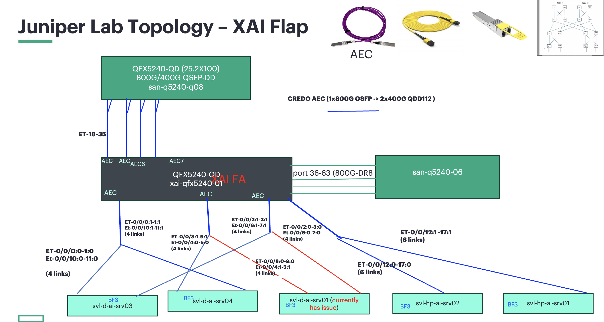
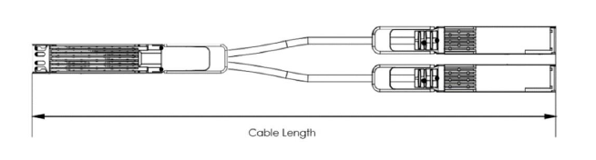
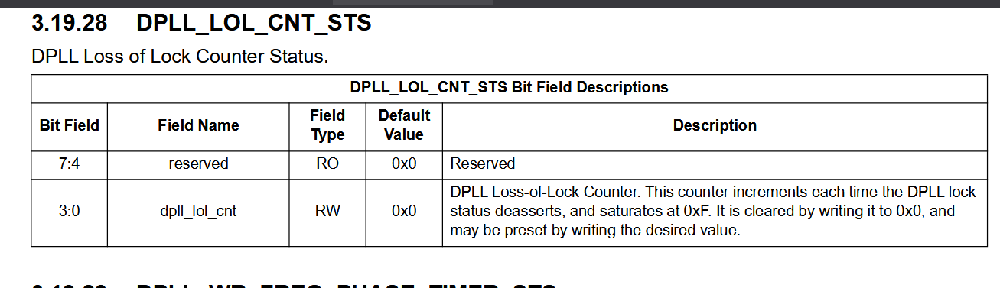

XAI Link Flap Escalation
Log Location
- /volume/CSdata/amodh/2025-1014-899718
Problem Statement
- All server facing ports (port 0-35) are flapping at the same time and recover in approx. 12 seconds. The issue started Oct 13 and is seen on more than 11 devices so far (11 out of 700+).
- Server facing ports use AEC cables - Y cables (800G <-> 2x400G). The uplink ports (p36 to 63) with DR8 optics do not see flaps.
- This issue was never reported in Mem-1 or Colossus-1.
- Each time a port flap is seen, the switch receives a LOS (Loss of Signal).
Initial Findings
- At 16:29:41 UTC on Dec 14, every front-panel AEC port
et-0/0/0throughet-0/0/35was driven to harddown by PFE linkscan (local fault) within the same second; seememy-cca-as1-1/memy-cca-journal-14-Dec.txtwhere each IFD flipsharddown:0 -> 1and SNMP trapLINK_DOWNfires. They recovered together at ~16:37:08 when the same interfaces clearharddown:1 -> 0in the same file. No FPC/PFE reset messages in the window, only mass link faults on these ports. - Switch-side port detail for one affected lane shows Rx LOS/LOCAL-FAULT during the event and a few uncorrected FECs when it flapped (for example,
memy-cca-as1-1/interface_flap.txtforet-0/0/17showsDevice flags: ... Transceiver-Rx-LOS,Active defects: LINK, LOCAL-FAULT,FEC Uncorrected Errors: 12, last flapped 16:29:42). - Hosts connected via these ports logged simultaneous down events: 20+ servers report
mlx5_eth0: Port: 1 Link DOWNat 16:29:41 (for example,memy-cca-as1-1/cca_logs/memy-cca-05-sr1.xpop.twttr.net/mlxlink_logs/log_20251214_162944_634.txt,memy-cca-as1-1/cca_logs/memy-cca-10-sr1.xpop.twttr.net/mlxlink_logs/log_20251214_162944_517.txt). - Cable diagnostics on an impacted host show the AEC blaming the local PHY: in
memy-cca-as1-1/cca_logs/memy-cca-10-sr1.xpop.twttr.net/mlxlink_logs/amber_flap_20251214_162944_517*.csvthe record hasLink_Down=1,Phy_Manager_State=Polling/Active,down_blame=Local_phy,local_reason_opcode=Alignment_loss, cable vendor Credo, 4m active copper (AEC). The “after 60 sec” capture still reportsLink_Down=1, meaning the AEC stayed down for at least a minute. - Scope matches the notes: only the AEC-connected front-panel ports (0-35) show the fault; higher-numbered QSFPs and other media types are not logging flaps in the same window.
What it points to
- Simultaneous alignment loss across all Credo AECs suggests a shared dependency (retimer firmware crash/reset or a power or I2C disturbance on the AEC cages) rather than individual links. The switch ASIC stayed up; hosts simply saw loss of light.
- No temperature or PSU alarms around the event, so thermal or brown-out seems unlikely.
Suggested next actions
- Reflash or upgrade NIC and AEC firmware (these logs show non-fastbootable AEC FW and local-phy alignment loss); swap one link to a DAC or optic as an A/B check.
- If possible, reseat or power-cycle a few AECs and watch amber or mlxlink for recovery; capture amber when links are healthy for baseline.
- If the 16:29 window coincided with maintenance, avoid running anything that toggles all AECs; otherwise open a vendor/RMA case for the Credo AEC batch with the above evidence.
- Keep
memy-cca-.../cca_logscollection handy for the next occurrence; if it repeats, consider moving critical traffic off ports 0-35 until the AEC issue is cleared.
Auto Negotiation Notes
- Credo confirmed auto negotiation for AEC cables should be turned off on both sides (switch and server).
- Broadcom also confirmed auto negotiation should be turned off on the switch.
- Please check and confirm auto negotiation is disabled.
- In the lab, link flaps were observed when auto negotiation was enabled or disabled.
- Can auto negotiation be disabled on a sample configuration?
Event Summary
- Symptoms: repeated down/up events on one uplink caused packet loss, retransmits, and elevated tail latency while flows hashed to the bad member.
- Customer impact: transient 5xx spikes (~3% for ~12 minutes) and p95 latency regression (+250–400 ms) until traffic drained off the flapping link.
- Mitigation: disabled the unhealthy link in the port-channel, forced traffic to the healthy member, replaced the suspect optic, and re-enabled after burn-in.
Current Status
Dated: Dec/22/2025
System Test Lab - Voltage margining, multiple power reset, optics insertion/removal, and firmware/software regression testing on the FA unit No pattern that resulted in repetitive/continuous flaps.
Hardware Lab - Chamber testing, Multiple thermal cycles [-5C -> room temp -> +40C -> room temp] completed but no flaps seen so far.
Hardware Lab - Power Testing, 3.3V optics power rails have been scoped and associated circuits reviewed. No issues found so far Attempts to force link flaps on an RMA QFX5240 by injecting noise have not been successful. Instrumented FA unit with probes and attempt to replicate link flaps, not able to find a consistent way to replicate the issue.
Hardware Lab – Timing, We have been evaluating clock circuits for a potential source of disruption that could impact multiple optical links simultaneously. It’s difficult to access clock signals directly for measurements due to how they are routed to BGA component with buried vias. Scoping these signals is tricky and requires more time and careful instrumentation. We have found that injecting a disturbance into a specific part of the timing circuit can cause simultaneous link flaps. The team is looking at all aspects to confirm if it’s resulting in the same issue reported at xAI. We are also trying to determine if and how a similar disturbance can potentially occur in normal operating conditions.
Systest Repro Summary
Summary entry for the systest reproduction work. See the child pages for details.
Overview
- We have reproduced the issue in more than 3 instances (multiple times in each instance).
- The behavior is the same:
local_reason_opcode = alignment losson the NIC end (Amber log). - NIC initializes; link goes down.
- Link comes back up.
- Resulting in a ~12-second link flap.
- One leg of the AEC cable was connected to BF-3; the other was dangling.
- Voltage margin variation: -5% to +3.16% of nominal.
- Built a scaled-up FA unit (2 occurrences of flap on one AEC, same signature as above) with:
- 32x 800G AEC to 2x400G BF-3140
- 22x 800G AEC to QFX5240-64QD
- 28x 800G OSFP 800G DR8 to QFX5240-64OD
Verification Logs
Repro with Probes Attached - Dec/19/2025
Amber logs from server

System Overview
CLI Summary
- EVO Version: show version
- FA Chassis details: show chassis hardware detail
- Fan Speed: show chassis fan
- System Environment: show chassis environment no-forwarding
- Temperature Threshold: show chassis enhanced-temperature-thresholds
- AEC Optics Info: show picd optics fpc_slot 0 pic_slot 0 port 0 cmd info
- DR8 Optics Info : show picd optics fpc_slot 0 pic_slot 0 port 40 cmd info
- AEC Advertised Speed: show picd optics qsfpdd fpc_slot 0 pic_slot 0 port 0 cmd advertised_applications
- DR8 Advertised Speed: show picd optics qsfpdd fpc_slot 0 pic_slot 0 port 40 cmd advertised_applications
- Server NIC: lshw -c net -businfo
- LLDP Neighbor: show lldp neighbors
CLI Output
root@xai-qfx5240-01> show version
Hostname: xai-qfx5240-01
Model: qfx5240-64od
Junos: 23.4X100-D40.7-EVO
Yocto: 3.0.2
Linux Kernel: 5.2.60-yocto-standard-g72d147e
JUNOS-EVO OS 64-bit [junos-evo-install-qfx-ms-x86-64-23.4X100-D40.7-EVO]
root@xai-qfx5240-01> show chassis hardware detail
Hardware inventory:
Item Version Part number Serial number Description
Chassis AO40023030 QFX5240-64OD
PSM 0 6U6LX010130122W AC AFO 3000W PSU
PSM 1 6U6LX010130124P AC AFO 3000W PSU
Routing Engine 0 BUILTIN BUILTIN RE-QFX5240
nvme0 480103 MB EPM3750-M8480GB5 511240703133000269 NVMe Solid State Disk
nvme1 480103 MB EPM3750-M8480GB5 511240703133001074 NVMe Solid State Disk
CB 0 REV 03 650-175147 AO40023030 QFX5240-64OD
FPC 0 BUILTIN BUILTIN QFX5240-64OD
PIC 0 BUILTIN BUILTIN 64X800G-OSFP
Xcvr 0 XXXX NON-JNPR BL8J4455150007V UNKNOWN
Xcvr 1 XXXX NON-JNPR BL8J44551500031 UNKNOWN
Xcvr 2 XXXX NON-JNPR BL8J45X5150012J UNKNOWN
Xcvr 3 XXXX NON-JNPR BL8J4455150000B UNKNOWN
Xcvr 4 XXXX NON-JNPR BL8J435539000XH UNKNOWN
Xcvr 5 XXXX NON-JNPR BL8J435539001U4 UNKNOWN
Xcvr 6 XXXX NON-JNPR BL8J43X5440009W UNKNOWN
Xcvr 7 XXXX NON-JNPR BL8J43X544000BU UNKNOWN
Xcvr 8 XXXX NON-JNPR BL8J4355390012C UNKNOWN
Xcvr 9 XXXX NON-JNPR BL8J45X5150017N UNKNOWN
Xcvr 10 XXXX NON-JNPR BL8J44X515002M7 UNKNOWN
Xcvr 11 XXXX NON-JNPR BL8J435539001RL UNKNOWN
Xcvr 12 XXXX NON-JNPR BL8J45X5150000W UNKNOWN
Xcvr 13 XXXX NON-JNPR BL8J45X51500173 UNKNOWN
Xcvr 14 XXXX NON-JNPR BL8J4455150008U UNKNOWN
Xcvr 15 XXXX NON-JNPR BL8J45X515000TU UNKNOWN
Xcvr 16 XXXX NON-JNPR BL8J44X51500272 UNKNOWN
Xcvr 17 XXXX NON-JNPR BL8J44X51500254 UNKNOWN
Xcvr 18 XXXX NON-JNPR BL8J45X5150000F UNKNOWN
Xcvr 19 XXXX NON-JNPR BL8J43X544000L0 UNKNOWN
Xcvr 20 XXXX NON-JNPR BL8J44X5150028X UNKNOWN
Xcvr 21 XXXX NON-JNPR BL8J4455150002L UNKNOWN
Xcvr 22 XXXX NON-JNPR BL8J4455150004R UNKNOWN
Xcvr 23 XXXX NON-JNPR BL8J4455150001D UNKNOWN
Xcvr 24 XXXX NON-JNPR BL8J435515000F7 UNKNOWN
Xcvr 25 XXXX NON-JNPR BL8J4455150006E UNKNOWN
Xcvr 26 XXXX NON-JNPR BL8J4455150006G UNKNOWN
Xcvr 27 XXXX NON-JNPR BL8J4455150000G UNKNOWN
Xcvr 28 XXXX NON-JNPR BL8J43X544000GE UNKNOWN
Xcvr 29 XXXX NON-JNPR BL8J44551500061 UNKNOWN
Xcvr 30 XXXX NON-JNPR BL8J44X515002M4 UNKNOWN
Xcvr 31 XXXX NON-JNPR BL8J44X515001Y8 UNKNOWN
Xcvr 32 XXXX NON-JNPR BL8J435515000NZ UNKNOWN
Xcvr 33 XXXX NON-JNPR BL8J44X515001K6 UNKNOWN
Xcvr 34 XXXX NON-JNPR BL8J435539001K2 UNKNOWN
Xcvr 35 XXXX NON-JNPR BL8J435515000KY UNKNOWN
Xcvr 36 REV 01 740-174932 1G1TK1AA350HD OSFP-800G-DR8
Xcvr 37 REV 01 740-174933 1A1CVWA91100G OSFP-800G-DR8-P
Xcvr 38 REV 01 740-174933 1A1CVWA91102T OSFP-800G-DR8-P
Xcvr 39 REV 01 740-174933 1A1CVWA911007 OSFP-800G-DR8-P
Xcvr 40 REV 01 740-174932 1G1TK1AA350AZ OSFP-800G-DR8
Xcvr 41 REV 01 740-174933 1G1TVWA9361T9 OSFP-800G-DR8-P
Xcvr 42 REV 01 740-174933 1A1CVWA908009 OSFP-800G-DR8-P
Xcvr 43 REV 01 740-174933 1A1CVWA911037 OSFP-800G-DR8-P
Xcvr 44 REV 01 740-174933 1A1CVWA911018 OSFP-800G-DR8-P
Xcvr 45 REV 01 740-174933 1A1CVWA91101A OSFP-800G-DR8-P
Xcvr 46 REV 01 740-174933 1A1CVWA91104J OSFP-800G-DR8-P
Xcvr 47 REV 01 740-174933 1A1CVWA91101S OSFP-800G-DR8-P
Xcvr 48 REV 01 740-174933 1A1CVWA91100V OSFP-800G-DR8-P
Xcvr 49 REV 01 740-174933 1A1CVWA911014 OSFP-800G-DR8-P
Xcvr 50 REV 01 740-174933 1A1CVWA91104L OSFP-800G-DR8-P
Xcvr 51 REV 01 740-174933 1A1CVWA911015 OSFP-800G-DR8-P
Xcvr 52 REV 01 740-174932 1G1TK1AA3509S OSFP-800G-DR8
Xcvr 53 REV 01 740-174933 1A1CVWA90901N OSFP-800G-DR8-P
Xcvr 54 REV 01 740-174933 1A1CVWA911019 OSFP-800G-DR8-P
Xcvr 55 REV 01 740-174933 1A1CVWA91100W OSFP-800G-DR8-P
Xcvr 56 REV 01 740-174932 1G1TK1A94602E OSFP-800G-DR8
Xcvr 57 REV 01 740-174933 1A1CVWA91101V OSFP-800G-DR8-P
Xcvr 58 REV 01 740-174933 1A1CVWA9090C5 OSFP-800G-DR8-P
Xcvr 59 REV 01 740-174933 1A1CVWA91102L OSFP-800G-DR8-P
Xcvr 60 REV 01 740-174933 1A1CVWA911011 OSFP-800G-DR8-P
Xcvr 61 REV 01 740-174933 1A1CVWA9090C3 OSFP-800G-DR8-P
Xcvr 62 REV 01 740-174933 1A1CVWA91100R OSFP-800G-DR8-P
Fan Tray 0 QFX5240-64OD/QFX5240-64QD Fan Tray, Front to Back Airflow - AFO
Fan Tray 1 QFX5240-64OD/QFX5240-64QD Fan Tray, Front to Back Airflow - AFO
Fan Tray 2 QFX5240-64OD/QFX5240-64QD Fan Tray, Front to Back Airflow - AFO
Fan Tray 3 QFX5240-64OD/QFX5240-64QD Fan Tray, Front to Back Airflow - AFO
root@xai-qfx5240-01> show chassis environment no-forwarding
Class Item Status Measurement
Power PSM 0 OK 39 degrees C / 102 degrees F
PSM 1 OK 39 degrees C / 102 degrees F
Temp FPC 0 Sensor TH5 Max Reading OK 78 degrees C / 172 degrees F
FPC 0 xcvr-0/0/0 OK 50 degrees C / 122 degrees F
FPC 0 xcvr-0/0/1 OK 55 degrees C / 131 degrees F
FPC 0 xcvr-0/0/2 OK 55 degrees C / 131 degrees F
FPC 0 xcvr-0/0/3 OK 50 degrees C / 122 degrees F
FPC 0 xcvr-0/0/4 OK 53 degrees C / 127 degrees F
FPC 0 xcvr-0/0/5 OK 58 degrees C / 136 degrees F
FPC 0 xcvr-0/0/6 OK 57 degrees C / 134 degrees F
FPC 0 xcvr-0/0/7 OK 52 degrees C / 125 degrees F
FPC 0 xcvr-0/0/8 OK 51 degrees C / 123 degrees F
FPC 0 xcvr-0/0/9 OK 57 degrees C / 134 degrees F
FPC 0 xcvr-0/0/10 OK 58 degrees C / 136 degrees F
FPC 0 xcvr-0/0/11 OK 52 degrees C / 125 degrees F
FPC 0 xcvr-0/0/12 OK 52 degrees C / 125 degrees F
FPC 0 xcvr-0/0/13 OK 56 degrees C / 132 degrees F
FPC 0 xcvr-0/0/14 OK 57 degrees C / 134 degrees F
FPC 0 xcvr-0/0/15 OK 51 degrees C / 123 degrees F
FPC 0 xcvr-0/0/16 OK 53 degrees C / 127 degrees F
FPC 0 xcvr-0/0/17 OK 55 degrees C / 131 degrees F
FPC 0 xcvr-0/0/18 OK 58 degrees C / 136 degrees F
FPC 0 xcvr-0/0/19 OK 54 degrees C / 129 degrees F
FPC 0 xcvr-0/0/20 OK 55 degrees C / 131 degrees F
FPC 0 xcvr-0/0/21 OK 60 degrees C / 140 degrees F
FPC 0 xcvr-0/0/22 OK 60 degrees C / 140 degrees F
FPC 0 xcvr-0/0/23 OK 56 degrees C / 132 degrees F
FPC 0 xcvr-0/0/24 OK 57 degrees C / 134 degrees F
FPC 0 xcvr-0/0/25 OK 59 degrees C / 138 degrees F
FPC 0 xcvr-0/0/26 OK 60 degrees C / 140 degrees F
FPC 0 xcvr-0/0/27 OK 55 degrees C / 131 degrees F
FPC 0 xcvr-0/0/28 OK 55 degrees C / 131 degrees F
FPC 0 xcvr-0/0/29 OK 60 degrees C / 140 degrees F
FPC 0 xcvr-0/0/30 OK 58 degrees C / 136 degrees F
FPC 0 xcvr-0/0/31 OK 54 degrees C / 129 degrees F
FPC 0 xcvr-0/0/32 OK 56 degrees C / 132 degrees F
FPC 0 xcvr-0/0/33 OK 62 degrees C / 143 degrees F
FPC 0 xcvr-0/0/34 OK 61 degrees C / 141 degrees F
FPC 0 xcvr-0/0/35 OK 52 degrees C / 125 degrees F
FPC 0 xcvr-0/0/36 OK 55 degrees C / 131 degrees F
FPC 0 xcvr-0/0/37 OK 64 degrees C / 147 degrees F
FPC 0 xcvr-0/0/38 OK 66 degrees C / 150 degrees F
FPC 0 xcvr-0/0/39 OK 61 degrees C / 141 degrees F
FPC 0 xcvr-0/0/40 OK 57 degrees C / 134 degrees F
FPC 0 xcvr-0/0/41 OK 61 degrees C / 141 degrees F
FPC 0 xcvr-0/0/42 OK 67 degrees C / 152 degrees F
FPC 0 xcvr-0/0/43 OK 62 degrees C / 143 degrees F
FPC 0 xcvr-0/0/44 OK 59 degrees C / 138 degrees F
FPC 0 xcvr-0/0/45 OK 64 degrees C / 147 degrees F
FPC 0 xcvr-0/0/46 OK 66 degrees C / 150 degrees F
FPC 0 xcvr-0/0/47 OK 63 degrees C / 145 degrees F
FPC 0 xcvr-0/0/48 OK 60 degrees C / 140 degrees F
FPC 0 xcvr-0/0/49 OK 64 degrees C / 147 degrees F
FPC 0 xcvr-0/0/50 OK 67 degrees C / 152 degrees F
FPC 0 xcvr-0/0/51 OK 63 degrees C / 145 degrees F
FPC 0 xcvr-0/0/52 OK 58 degrees C / 136 degrees F
FPC 0 xcvr-0/0/53 OK 66 degrees C / 150 degrees F
FPC 0 xcvr-0/0/54 OK 66 degrees C / 150 degrees F
FPC 0 xcvr-0/0/55 OK 62 degrees C / 143 degrees F
FPC 0 xcvr-0/0/56 OK 56 degrees C / 132 degrees F
FPC 0 xcvr-0/0/57 OK 66 degrees C / 150 degrees F
FPC 0 xcvr-0/0/58 OK 61 degrees C / 141 degrees F
FPC 0 xcvr-0/0/59 OK 56 degrees C / 132 degrees F
FPC 0 xcvr-0/0/60 OK 59 degrees C / 138 degrees F
FPC 0 xcvr-0/0/61 OK 59 degrees C / 138 degrees F
FPC 0 xcvr-0/0/62 OK 57 degrees C / 134 degrees F
FPC 0 MB Middle Right Rear OK 51 degrees C / 123 degrees F
FPC 0 MB Middle Left Rear OK 52 degrees C / 125 degrees F
FPC 0 MB Left Rear OK 45 degrees C / 113 degrees F
FPC 0 MB Left Front OK 44 degrees C / 111 degrees F
FPC 0 MB Right Rear OK 41 degrees C / 105 degrees F
FPC 0 MB Right Front OK 40 degrees C / 104 degrees F
FPC 0 MB OPTICS_GRP1_3V3 OK 51 degrees C / 123 degrees F
FPC 0 MB OPTICS_GRP2_3V3 OK 52 degrees C / 125 degrees F
FPC 0 MB OPTICS_GRP3_3V3 OK 51 degrees C / 123 degrees F
FPC 0 MB VDD_0P75 OK 63 degrees C / 145 degrees F
FPC 0 MB TRVDD1_0V9_0V75 OK 52 degrees C / 125 degrees F
FPC 0 MB TRVDD0_0V9_0V75 OK 53 degrees C / 127 degrees F
FPC 0 FB Exhaust Left OK 41 degrees C / 105 degrees F
FPC 0 FB Exhaust Right OK 41 degrees C / 105 degrees F
Routing Engine 0 CPU Temperature OK 75 degrees C / 167 degrees F
Routing Engine 0 Ch-0 DIMM-0 Temp OK 58 degrees C / 136 degrees F
Routing Engine 0 Ch-1 DIMM-0 Temp OK 60 degrees C / 140 degrees F
Fan Fan Tray 0 Fan 1 OK 12000 RPM
Fan Tray 0 Fan 2 OK 11850 RPM
Fan Tray 1 Fan 1 OK 12000 RPM
Fan Tray 1 Fan 2 OK 12000 RPM
Fan Tray 2 Fan 1 OK 12000 RPM
Fan Tray 2 Fan 2 OK 12000 RPM
Fan Tray 3 Fan 1 OK 12000 RPM
Fan Tray 3 Fan 2 OK 12000 RPM
root@xai-qfx5240-01> show chassis fan
Item Status % RPM Measurement
Fan Tray 0 Fan 1 OK 89% 12150 RPM
Fan Tray 0 Fan 2 OK 77% 12000 RPM
Fan Tray 1 Fan 1 OK 88% 12000 RPM
Fan Tray 1 Fan 2 OK 77% 12000 RPM
Fan Tray 2 Fan 1 OK 88% 12000 RPM
Fan Tray 2 Fan 2 OK 77% 12000 RPM
Fan Tray 3 Fan 1 OK 88% 12000 RPM
Fan Tray 3 Fan 2 OK 77% 12000 RPM
root@xai-qfx5240-01> show chassis environment no-forwarding
Class Item Status Measurement
Power PSM 0 OK 38 degrees C / 100 degrees F
PSM 1 OK 38 degrees C / 100 degrees F
Temp FPC 0 Sensor TH5 Max Reading OK 77 degrees C / 170 degrees F
FPC 0 xcvr-0/0/0 OK 50 degrees C / 122 degrees F
FPC 0 xcvr-0/0/1 OK 54 degrees C / 129 degrees F
FPC 0 xcvr-0/0/2 OK 54 degrees C / 129 degrees F
FPC 0 xcvr-0/0/3 OK 50 degrees C / 122 degrees F
FPC 0 xcvr-0/0/4 OK 53 degrees C / 127 degrees F
FPC 0 xcvr-0/0/5 OK 58 degrees C / 136 degrees F
FPC 0 xcvr-0/0/6 OK 57 degrees C / 134 degrees F
FPC 0 xcvr-0/0/7 OK 51 degrees C / 123 degrees F
FPC 0 xcvr-0/0/8 OK 52 degrees C / 125 degrees F
FPC 0 xcvr-0/0/9 OK 59 degrees C / 138 degrees F
FPC 0 xcvr-0/0/10 OK 59 degrees C / 138 degrees F
FPC 0 xcvr-0/0/11 OK 52 degrees C / 125 degrees F
FPC 0 xcvr-0/0/12 OK 51 degrees C / 123 degrees F
FPC 0 xcvr-0/0/13 OK 57 degrees C / 134 degrees F
FPC 0 xcvr-0/0/14 OK 58 degrees C / 136 degrees F
FPC 0 xcvr-0/0/15 OK 51 degrees C / 123 degrees F
FPC 0 xcvr-0/0/16 OK 52 degrees C / 125 degrees F
FPC 0 xcvr-0/0/17 OK 55 degrees C / 131 degrees F
FPC 0 xcvr-0/0/18 OK 59 degrees C / 138 degrees F
FPC 0 xcvr-0/0/19 OK 54 degrees C / 129 degrees F
FPC 0 xcvr-0/0/20 OK 56 degrees C / 132 degrees F
FPC 0 xcvr-0/0/21 OK 59 degrees C / 138 degrees F
FPC 0 xcvr-0/0/22 OK 59 degrees C / 138 degrees F
FPC 0 xcvr-0/0/23 OK 55 degrees C / 131 degrees F
FPC 0 xcvr-0/0/24 OK 57 degrees C / 134 degrees F
FPC 0 xcvr-0/0/25 OK 60 degrees C / 140 degrees F
FPC 0 xcvr-0/0/26 OK 60 degrees C / 140 degrees F
FPC 0 xcvr-0/0/27 OK 54 degrees C / 129 degrees F
FPC 0 xcvr-0/0/28 OK 55 degrees C / 131 degrees F
FPC 0 xcvr-0/0/29 OK 60 degrees C / 140 degrees F
FPC 0 xcvr-0/0/30 OK 59 degrees C / 138 degrees F
FPC 0 xcvr-0/0/31 OK 53 degrees C / 127 degrees F
FPC 0 xcvr-0/0/32 OK 56 degrees C / 132 degrees F
FPC 0 xcvr-0/0/33 OK 62 degrees C / 143 degrees F
FPC 0 xcvr-0/0/34 OK 62 degrees C / 143 degrees F
FPC 0 xcvr-0/0/35 OK 52 degrees C / 125 degrees F
FPC 0 xcvr-0/0/36 OK 55 degrees C / 131 degrees F
FPC 0 xcvr-0/0/37 OK 64 degrees C / 147 degrees F
FPC 0 xcvr-0/0/38 OK 66 degrees C / 150 degrees F
FPC 0 xcvr-0/0/39 OK 61 degrees C / 141 degrees F
FPC 0 xcvr-0/0/40 OK 57 degrees C / 134 degrees F
FPC 0 xcvr-0/0/41 OK 61 degrees C / 141 degrees F
FPC 0 xcvr-0/0/42 OK 67 degrees C / 152 degrees F
FPC 0 xcvr-0/0/43 OK 62 degrees C / 143 degrees F
FPC 0 xcvr-0/0/44 OK 59 degrees C / 138 degrees F
FPC 0 xcvr-0/0/45 OK 64 degrees C / 147 degrees F
FPC 0 xcvr-0/0/46 OK 66 degrees C / 150 degrees F
FPC 0 xcvr-0/0/47 OK 63 degrees C / 145 degrees F
FPC 0 xcvr-0/0/48 OK 60 degrees C / 140 degrees F
FPC 0 xcvr-0/0/49 OK 64 degrees C / 147 degrees F
FPC 0 xcvr-0/0/50 OK 67 degrees C / 152 degrees F
FPC 0 xcvr-0/0/51 OK 63 degrees C / 145 degrees F
FPC 0 xcvr-0/0/52 OK 58 degrees C / 136 degrees F
FPC 0 xcvr-0/0/53 OK 66 degrees C / 150 degrees F
FPC 0 xcvr-0/0/54 OK 66 degrees C / 150 degrees F
FPC 0 xcvr-0/0/55 OK 62 degrees C / 143 degrees F
FPC 0 xcvr-0/0/56 OK 56 degrees C / 132 degrees F
FPC 0 xcvr-0/0/57 OK 66 degrees C / 150 degrees F
FPC 0 xcvr-0/0/58 OK 61 degrees C / 141 degrees F
FPC 0 xcvr-0/0/59 OK 56 degrees C / 132 degrees F
FPC 0 xcvr-0/0/60 OK 60 degrees C / 140 degrees F
FPC 0 xcvr-0/0/61 OK 59 degrees C / 138 degrees F
FPC 0 xcvr-0/0/62 OK 57 degrees C / 134 degrees F
FPC 0 MB Middle Right Rear OK 51 degrees C / 123 degrees F
FPC 0 MB Middle Left Rear OK 51 degrees C / 123 degrees F
FPC 0 MB Left Rear OK 45 degrees C / 113 degrees F
FPC 0 MB Left Front OK 44 degrees C / 111 degrees F
FPC 0 MB Right Rear OK 41 degrees C / 105 degrees F
FPC 0 MB Right Front OK 40 degrees C / 104 degrees F
FPC 0 MB OPTICS_GRP1_3V3 OK 51 degrees C / 123 degrees F
FPC 0 MB OPTICS_GRP2_3V3 OK 52 degrees C / 125 degrees F
FPC 0 MB OPTICS_GRP3_3V3 OK 52 degrees C / 125 degrees F
FPC 0 MB VDD_0P75 OK 62 degrees C / 143 degrees F
FPC 0 MB TRVDD1_0V9_0V75 OK 52 degrees C / 125 degrees F
FPC 0 MB TRVDD0_0V9_0V75 OK 52 degrees C / 125 degrees F
FPC 0 FB Exhaust Left OK 41 degrees C / 105 degrees F
FPC 0 FB Exhaust Right OK 41 degrees C / 105 degrees F
Routing Engine 0 CPU Temperature OK 76 degrees C / 168 degrees F
Routing Engine 0 Ch-0 DIMM-0 Temp OK 57 degrees C / 134 degrees F
Routing Engine 0 Ch-1 DIMM-0 Temp OK 60 degrees C / 140 degrees F
Fan Fan Tray 0 Fan 1 OK 12000 RPM
Fan Tray 0 Fan 2 OK 12000 RPM
Fan Tray 1 Fan 1 OK 12000 RPM
Fan Tray 1 Fan 2 OK 12000 RPM
Fan Tray 2 Fan 1 OK 12000 RPM
Fan Tray 2 Fan 2 OK 12000 RPM
Fan Tray 3 Fan 1 OK 12000 RPM
Fan Tray 3 Fan 2 OK 12000 RPM
root@xai-qfx5240-01> show chassis enhanced-temperature-thresholds
Fan speed Fan speed Yellow alarm Red alarm Fire Shutdown
(degrees C) (degrees C) (degrees C) (degrees C) (degrees C)
Item Normal High Full Bad fan Normal Bad fan Normal Bad fan Normal
Routing Engine 0 CPU Temperature 75 85 99 96 101 98 103 100 105
Routing Engine 0 Ch-0 DIMM-0 Temp 63 70 80 77 82 79 85 82 88
Routing Engine 0 Ch-1 DIMM-0 Temp 63 70 80 77 82 79 85 82 88
FPC 0 Sensor TH5 Max Reading 75 80 95 92 100 97 105 102 110
FPC 0 xcvr-0/0/0 50 57 67 67 70 70 75 75 76
FPC 0 xcvr-0/0/1 50 57 67 67 70 70 75 75 76
FPC 0 xcvr-0/0/2 50 57 67 67 70 70 75 75 76
FPC 0 xcvr-0/0/3 50 57 67 67 70 70 75 75 76
FPC 0 xcvr-0/0/4 50 57 67 67 70 70 75 75 76
FPC 0 xcvr-0/0/5 50 57 67 67 70 70 75 75 76
FPC 0 xcvr-0/0/6 50 57 67 67 70 70 75 75 76
FPC 0 xcvr-0/0/7 50 57 67 67 70 70 75 75 76
FPC 0 xcvr-0/0/8 50 57 67 67 70 70 75 75 76
FPC 0 xcvr-0/0/9 50 57 67 67 70 70 75 75 76
FPC 0 xcvr-0/0/10 50 57 67 67 70 70 75 75 76
FPC 0 xcvr-0/0/11 50 57 67 67 70 70 75 75 76
FPC 0 xcvr-0/0/12 50 57 67 67 70 70 75 75 76
FPC 0 xcvr-0/0/13 50 57 67 67 70 70 75 75 76
FPC 0 xcvr-0/0/14 50 57 67 67 70 70 75 75 76
FPC 0 xcvr-0/0/15 50 57 67 67 70 70 75 75 76
FPC 0 xcvr-0/0/16 50 57 67 67 70 70 75 75 76
FPC 0 xcvr-0/0/17 50 57 67 67 70 70 75 75 76
FPC 0 xcvr-0/0/18 50 57 67 67 70 70 75 75 76
FPC 0 xcvr-0/0/19 50 57 67 67 70 70 75 75 76
FPC 0 xcvr-0/0/20 50 57 67 67 70 70 75 75 76
FPC 0 xcvr-0/0/21 50 57 67 67 70 70 75 75 76
FPC 0 xcvr-0/0/22 50 57 67 67 70 70 75 75 76
FPC 0 xcvr-0/0/23 50 57 67 67 70 70 75 75 76
FPC 0 xcvr-0/0/24 50 57 67 67 70 70 75 75 76
FPC 0 xcvr-0/0/25 50 57 67 67 70 70 75 75 76
FPC 0 xcvr-0/0/26 50 57 67 67 70 70 75 75 76
FPC 0 xcvr-0/0/27 50 57 67 67 70 70 75 75 76
FPC 0 xcvr-0/0/28 50 57 67 67 70 70 75 75 76
FPC 0 xcvr-0/0/29 50 57 67 67 70 70 75 75 76
FPC 0 xcvr-0/0/30 50 57 67 67 70 70 75 75 76
FPC 0 xcvr-0/0/31 50 57 67 67 70 70 75 75 76
FPC 0 xcvr-0/0/32 50 57 67 67 70 70 75 75 76
FPC 0 xcvr-0/0/33 50 57 67 67 70 70 75 75 76
FPC 0 xcvr-0/0/34 50 57 67 67 70 70 75 75 76
FPC 0 xcvr-0/0/35 50 57 67 67 70 70 75 75 76
FPC 0 xcvr-0/0/36 53 60 70 70 73 73 76 76 77
FPC 0 xcvr-0/0/37 53 60 70 70 73 73 76 76 77
FPC 0 xcvr-0/0/38 53 60 70 70 73 73 76 76 77
FPC 0 xcvr-0/0/39 53 60 70 70 73 73 76 76 77
FPC 0 xcvr-0/0/40 53 60 70 70 73 73 76 76 77
FPC 0 xcvr-0/0/41 53 60 70 70 73 73 76 76 77
FPC 0 xcvr-0/0/42 53 60 70 70 73 73 76 76 77
FPC 0 xcvr-0/0/43 53 60 70 70 73 73 76 76 77
FPC 0 xcvr-0/0/44 53 60 70 70 73 73 76 76 77
FPC 0 xcvr-0/0/45 53 60 70 70 73 73 76 76 77
FPC 0 xcvr-0/0/46 53 60 70 70 73 73 76 76 77
FPC 0 xcvr-0/0/47 53 60 70 70 73 73 76 76 77
FPC 0 xcvr-0/0/48 53 60 70 70 73 73 76 76 77
FPC 0 xcvr-0/0/49 53 60 70 70 73 73 76 76 77
FPC 0 xcvr-0/0/50 53 60 70 70 73 73 76 76 77
FPC 0 xcvr-0/0/51 53 60 70 70 73 73 76 76 77
FPC 0 xcvr-0/0/52 53 60 70 70 73 73 76 76 77
FPC 0 xcvr-0/0/53 53 60 70 70 73 73 76 76 77
FPC 0 xcvr-0/0/54 53 60 70 70 73 73 76 76 77
FPC 0 xcvr-0/0/55 53 60 70 70 73 73 76 76 77
FPC 0 xcvr-0/0/56 53 60 70 70 73 73 76 76 77
FPC 0 xcvr-0/0/57 53 60 70 70 73 73 76 76 77
FPC 0 xcvr-0/0/58 53 60 70 70 73 73 76 76 77
FPC 0 xcvr-0/0/59 53 60 70 70 73 73 76 76 77
FPC 0 xcvr-0/0/60 53 60 70 70 73 73 76 76 77
FPC 0 xcvr-0/0/61 53 60 70 70 73 73 76 76 77
FPC 0 xcvr-0/0/62 53 60 70 70 73 73 76 76 77
FPC 0 MB Middle Right Rear 45 50 75 72 80 77 85 82 90
FPC 0 MB Middle Left Rear 45 50 75 72 80 77 85 82 90
FPC 0 MB Left Rear 45 50 75 72 80 77 85 82 90
FPC 0 MB Left Front 45 50 75 72 80 77 85 82 90
FPC 0 MB Right Rear 45 50 75 72 80 77 85 82 90
FPC 0 MB Right Front 45 50 75 72 80 77 85 82 90
FPC 0 MB OPTICS_GRP1_3V3 75 80 110 107 115 112 120 117 125
FPC 0 MB OPTICS_GRP2_3V3 75 80 110 107 115 112 120 117 125
FPC 0 MB OPTICS_GRP3_3V3 75 80 110 107 115 112 120 117 125
FPC 0 MB VDD_0P75 75 80 110 107 115 112 120 117 125
FPC 0 MB TRVDD1_0V9_0V75 75 80 110 107 115 112 120 117 125
FPC 0 MB TRVDD0_0V9_0V75 75 80 110 107 115 112 120 117 125
FPC 0 FB Exhaust Left 40 45 60 57 65 62 70 67 75
FPC 0 FB Exhaust Right 40 45 60 57 65 62 70 67 75
root@xai-qfx5240-01:pfe> show picd optics fpc_slot 0 pic_slot 0 port 0 cmd info
PICD optics info
fpc_num: 0
pic_num: 0
port_num: 0
run_periodic: true
periodic_ticks: 7507
is_diagnostics: false
QSFP_presence: true
is_channelized: true
config_mismatch: false
Module firmware revision: 1.4
Module HW revision: 10.0
CMIS version: 0x50
Module State Machine: active_ready
DP State Machine
DP 0: dp_ready
DP 1: dp_ready
EEPROM details for XCVR: xcvr-0/0/0
QSFP-DD Lower Page:
0 1 2 3 4 5 6 7 8 9 a b c d e f
0x00:19 50 00 07 00 00 00 00 00 00 00 00 00 00 33 44
0x10:80 d4 00 00 00 00 00 00 00 00 00 00 00 00 00 00
0x20:00 00 00 00 00 00 00 01 04 00 00 00 00 00 00 00
0x30:00 00 00 00 00 00 00 00 00 00 00 00 00 00 00 00
0x40:00 00 00 00 00 00 00 00 00 00 00 00 00 00 00 00
0x50:00 00 00 00 00 04 4b 04 11 ff 4c 04 11 ff 4d 04
0x60:22 55 4e 04 22 55 4f 04 44 11 50 04 44 11 ff 00
0x70:00 00 00 00 00 00 00 00 00 00 00 00 00 00 00 11
QSFP-DD Upper Page 00h:
0 1 2 3 4 5 6 7 8 9 a b c d e f
0x80:19 43 72 65 64 6f 20 20 20 20 20 20 20 20 20 20
0x90:20 9a ad ca 43 41 43 38 34 35 33 30 31 41 32 4e
0xa0:43 32 58 41 20 20 42 4c 38 4a 34 34 35 35 31 35
0xb0:30 30 30 37 56 20 32 35 30 34 30 39 20 20 20 20
0xc0:20 20 20 20 20 20 20 20 c0 34 2d 23 00 00 00 00
0xd0:00 00 00 03 0c 00 00 00 00 00 00 00 00 00 0e 00
0xe0:00 00 00 00 00 00 00 00 00 00 00 00 00 00 00 00
0xf0:00 00 00 00 00 00 00 00 00 00 00 00 00 00 00 00
QSFP-DD Upper Page 01h:
0 1 2 3 4 5 6 7 8 9 a b c d e f
0x80:01 04 0a 00 00 00 00 00 00 00 00 00 00 00 20 00
0x90:59 60 46 00 00 02 9d 00 00 70 77 0b 03 06 06 03
0xa0:00 09 3d 67 0f 00 00 67 44 00 00 00 00 00 00 00
0xb0:ff ff 55 55 11 11 00 00 00 00 00 00 00 00 00 00
0xc0:00 00 00 00 00 00 00 00 00 00 00 00 00 00 00 00
0xd0:00 00 00 00 00 00 00 00 00 00 00 00 00 00 00 00
0xe0:00 00 00 00 00 00 00 00 00 00 00 00 00 00 00 00
0xf0:00 00 00 00 00 00 00 00 00 00 00 00 00 00 00 fd
QSFP-DD Upper Page 02h:
0 1 2 3 4 5 6 7 8 9 a b c d e f
0x80:4b 00 fb 00 46 00 00 00 8b 42 76 8e 87 5a 7a 76
0x90:00 00 00 00 00 00 00 00 00 00 00 00 00 00 00 00
0xa0:00 00 00 00 00 00 00 00 00 00 00 00 00 00 00 00
0xb0:00 00 00 00 00 00 00 00 00 00 00 00 00 00 00 00
0xc0:00 00 00 00 00 00 00 00 00 00 00 00 00 00 00 00
0xd0:00 00 00 00 00 00 00 00 00 00 00 00 00 00 00 00
0xe0:00 00 00 00 00 00 00 00 00 00 00 00 00 00 00 00
0xf0:00 00 00 00 00 00 00 00 00 00 00 00 00 00 00 2e
Upper Page 10h:
0 1 2 3 4 5 6 7 8 9 a b c d e f
0x80:00 00 00 00 00 00 00 00 00 00 00 00 00 00 00 00
0x90:00 50 50 50 50 58 58 58 58 ff 00 00 00 00 00 00
0xa0:ff ff 55 55 55 55 00 00 00 00 11 11 11 11 00 00
0xb0:00 00 00 00 10 12 14 16 18 1a 1c 1e ff 00 00 00
0xc0:00 00 00 ff ff 55 55 55 55 00 00 00 00 11 11 11
0xd0:11 00 00 00 00 00 00 00 00 00 00 00 00 00 00 00
0xe0:00 00 00 00 00 00 00 00 00 00 00 00 00 00 00 00
0xf0:00 00 00 00 00 00 00 00 00 00 00 00 00 00 00 00
Upper Page 11h:
0 1 2 3 4 5 6 7 8 9 a b c d e f
0x80:44 44 44 44 ff ff 00 00 00 00 00 00 00 00 00 00
0x90:00 00 00 00 00 00 00 00 00 00 00 00 00 00 00 00
0xa0:00 00 00 00 00 00 00 00 00 00 00 00 00 00 00 00
0xb0:00 00 00 00 00 00 00 00 00 00 00 00 00 00 00 00
0xc0:00 00 00 00 00 00 00 00 00 00 11 11 11 11 50 50
0xd0:50 50 58 58 58 58 ff 00 00 00 00 00 00 ff ff 55
0xe0:55 55 55 00 00 00 00 11 11 11 11 00 00 00 00 00
0xf0:00 00 00 00 00 00 00 00 00 00 00 00 00 00 00 00
Warning: Page 10h,11h maybe stale
Warning: Please run test picd optics cmd eeprom_rescan
root@xai-qfx5240-01:pfe> show picd optics qsfpdd fpc_slot 0 pic_slot 0 port 0 cmd advertised_applications
xcvr-0/0/0:
Ap Sel Host Intf Code Media Intf Code Host Lanes Media Lanes Host Assign Media Assign
1 100GAUI-1-S C2M (Annex 120G) (75) AOC with BER < 10^(-6) (4) 1 1 255 255
2 100GAUI-1-L C2M (Annex 120G) (76) AOC with BER < 10^(-6) (4) 1 1 255 255
3 200GAUI-2-S C2M (Annex 120G) (77) AOC with BER < 10^(-6) (4) 2 2 85 85
4 200GAUI-2-L C2M (Annex 120G) (78) AOC with BER < 10^(-6) (4) 2 2 85 85
5 400GAUI-4-S C2M (Annex 120G) (79) AOC with BER < 10^(-6) (4) 4 4 17 17
6 400GAUI-4-L C2M (Annex 120G) (80) AOC with BER < 10^(-6) (4) 4 4 17 17
root@xai-qfx5240-01:pfe> show picd optics qsfpdd fpc_slot 0 pic_slot 0 port 2 cmd advertised_applications
xcvr-0/0/2:
Ap Sel Host Intf Code Media Intf Code Host Lanes Media Lanes Host Assign Media Assign
1 100GAUI-1-S C2M (Annex 120G) (75) AOC with BER < 10^(-6) (4) 1 1 255 255
2 100GAUI-1-L C2M (Annex 120G) (76) AOC with BER < 10^(-6) (4) 1 1 255 255
3 200GAUI-2-S C2M (Annex 120G) (77) AOC with BER < 10^(-6) (4) 2 2 85 85
4 200GAUI-2-L C2M (Annex 120G) (78) AOC with BER < 10^(-6) (4) 2 2 85 85
5 400GAUI-4-S C2M (Annex 120G) (79) AOC with BER < 10^(-6) (4) 4 4 17 17
6 400GAUI-4-L C2M (Annex 120G) (80) AOC with BER < 10^(-6) (4) 4 4 17 17
root@xai-qfx5240-01:pfe> show picd optics qsfpdd fpc_slot 0 pic_slot 0 port 40 cmd advertised_applications
xcvr-0/0/40:
Ap Sel Host Intf Code Media Intf Code Host Lanes Media Lanes Host Assign Media Assign
1 400GAUI-4-S C2M (Annex 120G) (79) 400GBASE-DR4 (Clause 124) (28) 4 4 17 17
2 400GAUI-4-L C2M (Annex 120G) (80) 400GBASE-DR4 (Clause 124) (28) 4 4 17 17
3 100GAUI-1-S C2M (Annex 120G) (75) 100GBASE-DR (Clause 140) (20) 1 1 255 255
4 100GAUI-1-L C2M (Annex 120G) (76) 100GBASE-DR (Clause 140) (20) 1 1 255 255
5 800GAUI-8 S C2M (Annex 120G) (81) 800GBASE-DR8 (placeholder) (86) 8 8 1 1
6 800GAUI-8 L C2M (Annex 120G) (82) 800GBASE-DR8 (placeholder) (86) 8 8 1 1
7 200GAUI-2-S C2M (Annex 120G) (77) Vendor Specific/Custom (224) 2 2 85 85
8 200GAUI-2-L C2M (Annex 120G) (78) Vendor Specific/Custom (224) 2 2 85 85
root@xai-qfx5240-01:pfe> show picd optics fpc_slot 0 pic_slot 0 port 40 cmd info
PICD optics info
fpc_num: 0
pic_num: 0
port_num: 40
run_periodic: true
periodic_ticks: 6895
is_diagnostics: false
QSFP_presence: true
is_channelized: false
config_mismatch: false
Module firmware revision: 0.13
Module HW revision: 1.2
CMIS version: 0x51
Module State Machine: active_ready
DP State Machine
DP 0: dp_ready
EEPROM details for XCVR: xcvr-0/0/40
QSFP-DD Lower Page:
0 1 2 3 4 5 6 7 8 9 a b c d e f
0x00:19 51 00 07 00 00 00 00 00 00 00 00 00 00 39 ee
0x10:81 21 df fd 37 04 00 00 00 00 60 00 00 00 00 00
0x20:00 00 f0 00 ff 00 00 00 0d 00 00 00 00 00 00 00
0x30:00 00 00 00 00 00 00 00 00 00 00 00 00 00 00 00
0x40:00 00 00 01 00 00 d1 17 00 00 00 00 00 00 00 00
0x50:00 00 00 00 00 02 4f 1c 44 11 50 1c 44 11 4b 14
0x60:11 ff 4c 14 11 ff 51 56 88 01 52 56 88 01 4d e0
0x70:22 55 4e e0 22 55 00 00 00 00 00 00 00 00 00 00
QSFP-DD Upper Page 00h:
0 1 2 3 4 5 6 7 8 9 a b c d e f
0x80:19 4a 55 4e 49 50 45 52 2d 31 47 31 20 20 20 20
0x90:20 20 1b c9 37 34 30 2d 31 37 34 39 33 32 20 20
0xa0:20 20 20 20 30 31 31 47 31 54 4b 31 41 41 33 35
0xb0:30 41 5a 20 20 20 32 35 30 38 32 36 20 20 43 4d
0xc0:55 49 41 5a 37 42 41 41 e0 42 00 28 00 00 00 00
0xd0:00 00 00 00 06 00 00 00 00 00 00 00 00 00 ec 31
0xe0:47 31 4b 31 41 20 20 20 20 20 20 20 20 20 20 30
0xf0:31 03 01 00 00 00 00 00 00 00 00 00 00 00 00 00
QSFP-DD Upper Page 01h:
0 1 2 3 4 5 6 7 8 9 a b c d e f
0x80:00 00 01 02 05 00 00 00 00 00 66 6c 05 14 64 00
0x90:37 e9 46 00 00 00 9d 18 00 f0 77 bb 03 07 06 0f
0xa0:07 09 1d 77 ff 1f 80 47 34 00 00 00 00 00 00 00
0xb0:11 11 ff ff 01 01 55 55 55 55 00 00 00 00 00 00
0xc0:00 00 00 00 00 00 00 00 00 00 00 00 00 00 00 00
0xd0:00 00 00 00 00 00 00 00 00 00 00 00 00 00 00 4d
0xe0:00 22 55 4e 00 22 55 ff 00 00 00 00 00 00 00 00
0xf0:00 00 00 00 00 00 00 00 00 00 00 00 00 00 00 6e
QSFP-DD Upper Page 02h:
0 1 2 3 4 5 6 7 8 9 a b c d e f
0x80:4c 00 fa 00 49 00 fd 00 90 88 75 30 8c a0 77 24
0x90:7f ff 80 00 79 98 86 67 3c 00 2d 00 3a 00 2f 00
0xa0:00 00 00 00 00 00 00 00 00 00 00 00 00 00 00 00
0xb0:9b 82 0a 0a 7b 86 0c a3 fd e8 13 88 f4 24 1d 4c
0xc0:ba f7 05 08 94 82 07 1b 00 00 00 00 00 00 00 00
0xd0:00 00 00 00 00 00 00 00 00 00 00 00 00 00 00 00
0xe0:00 00 00 00 00 00 00 00 00 00 00 00 00 00 00 00
0xf0:00 00 00 00 00 00 00 00 00 00 00 00 00 00 00 b6
QSFP-DD Upper Page 03h:
0 1 2 3 4 5 6 7 8 9 a b c d e f
0x80:00 00 00 00 00 00 00 00 00 00 00 00 00 00 00 00
0x90:00 00 00 00 00 00 00 00 00 00 00 00 00 00 00 00
0xa0:00 00 00 00 00 00 00 00 00 00 00 00 00 00 00 00
0xb0:00 00 00 00 00 00 00 00 00 00 00 00 00 00 00 00
0xc0:00 00 00 00 00 00 00 00 00 00 00 00 00 00 00 00
0xd0:00 00 00 00 00 00 00 00 00 00 00 00 00 00 00 00
0xe0:00 00 00 00 00 00 00 00 00 00 00 00 00 00 00 00
0xf0:00 00 00 00 00 00 00 00 00 00 00 00 00 00 00 00
Upper Page 10h:
0 1 2 3 4 5 6 7 8 9 a b c d e f
0x80:00 00 00 00 00 00 00 00 00 00 00 00 00 00 00 00
0x90:00 50 50 50 50 50 50 50 50 ff 00 00 00 00 00 00
0xa0:ff ff 22 22 22 22 00 00 00 00 11 11 11 11 00 00
0xb0:00 00 00 00 00 00 00 00 00 00 00 00 00 00 00 00
0xc0:00 00 00 00 00 00 00 00 00 00 00 00 00 00 00 00
0xd0:00 00 00 00 00 00 00 00 00 00 00 00 00 00 00 00
0xe0:00 00 00 00 00 00 00 00 00 00 00 00 00 00 00 00
0xf0:00 00 00 00 00 00 00 00 00 00 00 00 00 00 00 00
Upper Page 11h:
0 1 2 3 4 5 6 7 8 9 a b c d e f
0x80:44 44 44 44 ff ff 00 00 00 00 00 00 00 00 00 00
0x90:00 00 00 00 00 00 00 00 00 00 4d 0b 3a 21 3b 9e
0xa0:35 21 45 38 2d c1 48 ff 3b c5 88 af 88 af 88 af
0xb0:88 af 88 af 88 af 88 af 88 af 42 32 42 85 52 1b
0xc0:42 de 40 a9 4b 4f 29 d3 3b 8f 11 11 11 11 50 50
0xd0:50 50 50 50 50 50 ff 00 00 00 00 00 00 ff ff 22
0xe0:22 22 22 00 00 00 00 11 11 11 11 00 00 00 00 00
0xf0:11 22 33 44 55 66 77 88 11 22 33 44 55 66 77 88
Warning: Page 10h,11h maybe stale
Warning: Please run test picd optics cmd eeprom_rescan
root@xai-qfx5240-01> show lldp neighbors
Local Interface Parent Interface Chassis Id Port info System Name
et-0/0/17:1 - 6c:92:cf:06:91:3e ens5f0np0 svl-hp-ai-srv01.englab.juniper.net
et-0/0/16:1 - 6c:92:cf:06:91:3e ens6f0np0 svl-hp-ai-srv01.englab.juniper.net
et-0/0/2:1 - 6c:92:cf:06:91:3e ens3f0np0 svl-hp-ai-srv01.englab.juniper.net
et-0/0/12:1 - 6c:92:cf:06:91:3e ens1f0np0 svl-hp-ai-srv01.englab.juniper.net
et-0/0/15:1 - 6c:92:cf:06:91:3e ens4f0np0 svl-hp-ai-srv01.englab.juniper.net
et-0/0/13:1 - 6c:92:cf:06:91:3e ens2f0np0 svl-hp-ai-srv01.englab.juniper.net
re0:mgmt-0 - 80:43:3f:1d:a7:80 ge-1/0/42 sd-mgmt-a25.englab.juniper.net
et-0/0/29:1 - ac:a0:9d:b3:0c:50 et-0/0/15 san-q5240-q09.englab.juniper.net
et-0/0/26:1 - ac:a0:9d:b3:0c:50 et-0/0/19 san-q5240-q09.englab.juniper.net
et-0/0/27:1 - ac:a0:9d:b3:0c:50 et-0/0/21 san-q5240-q09.englab.juniper.net
et-0/0/25:1 - ac:a0:9d:b3:0c:50 et-0/0/23 san-q5240-q09.englab.juniper.net
et-0/0/21:1 - ac:a0:9d:b3:0c:50 et-0/0/17 san-q5240-q09.englab.juniper.net
et-0/0/20:1 - ac:a0:9d:b3:0c:50 et-0/0/29 san-q5240-q09.englab.juniper.net
et-0/0/31:1 - ac:a0:9d:b3:0c:50 et-0/0/37 san-q5240-q09.englab.juniper.net
et-0/0/34:1 - ac:a0:9d:b3:0c:50 et-0/0/49 san-q5240-q09.englab.juniper.net
et-0/0/22:1 - ac:a0:9d:b3:0c:50 et-0/0/7 san-q5240-q09.englab.juniper.net
et-0/0/23:1 - ac:a0:9d:b3:0c:50 et-0/0/11 san-q5240-q09.englab.juniper.net
et-0/0/33:1 - b4:16:78:54:dc:4b et-0/0/42 san-q5240-q08.englab.juniper.net
et-0/0/30:0 - b4:16:78:54:dc:4b et-0/0/43 san-q5240-q08.englab.juniper.net
et-0/0/30:1 - b4:16:78:54:dc:4b et-0/0/44 san-q5240-q08.englab.juniper.net
et-0/0/24:0 - b4:16:78:54:dc:4b et-0/0/45 san-q5240-q08.englab.juniper.net
et-0/0/24:1 - b4:16:78:54:dc:4b et-0/0/46 san-q5240-q08.englab.juniper.net
et-0/0/53:0 - b4:16:78:54:dc:4b et-0/0/49 san-q5240-q08.englab.juniper.net
et-0/0/53:1 - b4:16:78:54:dc:4b et-0/0/50 san-q5240-q08.englab.juniper.net
et-0/0/58:0 - b4:16:78:54:dc:4b et-0/0/51 san-q5240-q08.englab.juniper.net
et-0/0/58:1 - b4:16:78:54:dc:4b et-0/0/52 san-q5240-q08.englab.juniper.net
et-0/0/42:0 - b4:16:78:54:dc:4b et-0/0/53 san-q5240-q08.englab.juniper.net
et-0/0/42:1 - b4:16:78:54:dc:4b et-0/0/54 san-q5240-q08.englab.juniper.net
et-0/0/32:0 - b4:16:78:54:dc:4b et-0/0/56 san-q5240-q08.englab.juniper.net
et-0/0/32:1 - b4:16:78:54:dc:4b et-0/0/57 san-q5240-q08.englab.juniper.net
et-0/0/28:0 - b4:16:78:54:dc:4b et-0/0/60 san-q5240-q08.englab.juniper.net
et-0/0/28:1 - b4:16:78:54:dc:4b et-0/0/61 san-q5240-q08.englab.juniper.net
et-0/0/19:0 - b4:16:78:54:dc:4b et-0/0/62 san-q5240-q08.englab.juniper.net
et-0/0/19:1 - b4:16:78:54:dc:4b et-0/0/63 san-q5240-q08.englab.juniper.net
et-0/0/44:0 - bc:0f:fe:09:ca:6e Connected to R0 Spine1 san-q5240-06.englab.juniper.net
et-0/0/44:1 - bc:0f:fe:09:ca:6e Connected to R0 Spine1 san-q5240-06.englab.juniper.net
et-0/0/51:0 - bc:0f:fe:09:ca:6e et-0/0/60:0 san-q5240-06.englab.juniper.net
et-0/0/51:1 - bc:0f:fe:09:ca:6e et-0/0/60:1 san-q5240-06.englab.juniper.net
et-0/0/57:0 - bc:0f:fe:09:ca:6e et-0/0/58:0 san-q5240-06.englab.juniper.net
et-0/0/57:1 - bc:0f:fe:09:ca:6e et-0/0/58:1 san-q5240-06.englab.juniper.net
et-0/0/55:1 - bc:0f:fe:09:ca:6e et-0/0/63:0 san-q5240-06.englab.juniper.net
et-0/0/55:0 - bc:0f:fe:09:ca:6e et-0/0/63:1 san-q5240-06.englab.juniper.net
et-0/0/61:0 - bc:0f:fe:09:ca:6e et-0/0/57:0 san-q5240-06.englab.juniper.net
et-0/0/61:1 - bc:0f:fe:09:ca:6e et-0/0/57:1 san-q5240-06.englab.juniper.net
et-0/0/60:0 - bc:0f:fe:09:ca:6e et-0/0/48:0 san-q5240-06.englab.juniper.net
et-0/0/41:0 - bc:0f:fe:09:ca:6e et-0/0/56:0 san-q5240-06.englab.juniper.net
et-0/0/41:1 - bc:0f:fe:09:ca:6e et-0/0/56:1 san-q5240-06.englab.juniper.net
et-0/0/39:0 - bc:0f:fe:09:ca:6e et-0/0/59:0 san-q5240-06.englab.juniper.net
et-0/0/39:1 - bc:0f:fe:09:ca:6e et-0/0/59:1 san-q5240-06.englab.juniper.net
et-0/0/60:1 - bc:0f:fe:09:ca:6e et-0/0/48:1 san-q5240-06.englab.juniper.net
et-0/0/56:0 - bc:0f:fe:09:ca:6e et-0/0/35:0 san-q5240-06.englab.juniper.net
et-0/0/56:1 - bc:0f:fe:09:ca:6e et-0/0/35:1 san-q5240-06.englab.juniper.net
et-0/0/50:0 - bc:0f:fe:09:ca:6e et-0/0/36:0 san-q5240-06.englab.juniper.net
et-0/0/50:1 - bc:0f:fe:09:ca:6e et-0/0/36:1 san-q5240-06.englab.juniper.net
et-0/0/40:0 - bc:0f:fe:09:ca:6e et-0/0/40:0 san-q5240-06.englab.juniper.net
et-0/0/40:1 - bc:0f:fe:09:ca:6e et-0/0/40:1 san-q5240-06.englab.juniper.net
et-0/0/36:0 - bc:0f:fe:09:ca:6e et-0/0/41:0 san-q5240-06.englab.juniper.net
et-0/0/36:1 - bc:0f:fe:09:ca:6e et-0/0/41:1 san-q5240-06.englab.juniper.net
et-0/0/62:0 - bc:0f:fe:09:ca:6e et-0/0/42:0 san-q5240-06.englab.juniper.net
et-0/0/62:1 - bc:0f:fe:09:ca:6e et-0/0/42:1 san-q5240-06.englab.juniper.net
et-0/0/37:0 - bc:0f:fe:09:ca:6e et-0/0/43:0 san-q5240-06.englab.juniper.net
et-0/0/37:1 - bc:0f:fe:09:ca:6e et-0/0/43:1 san-q5240-06.englab.juniper.net
et-0/0/52:0 - bc:0f:fe:09:ca:6e et-0/0/44:0 san-q5240-06.englab.juniper.net
et-0/0/52:1 - bc:0f:fe:09:ca:6e et-0/0/44:1 san-q5240-06.englab.juniper.net
et-0/0/54:0 - bc:0f:fe:09:ca:6e et-0/0/45:0 san-q5240-06.englab.juniper.net
et-0/0/54:1 - bc:0f:fe:09:ca:6e et-0/0/45:1 san-q5240-06.englab.juniper.net
et-0/0/45:1 - bc:0f:fe:09:ca:6e et-0/0/46:0 san-q5240-06.englab.juniper.net
et-0/0/45:0 - bc:0f:fe:09:ca:6e et-0/0/46:1 san-q5240-06.englab.juniper.net
et-0/0/38:0 - bc:0f:fe:09:ca:6e et-0/0/47:0 san-q5240-06.englab.juniper.net
et-0/0/38:1 - bc:0f:fe:09:ca:6e et-0/0/47:1 san-q5240-06.englab.juniper.net
et-0/0/46:1 - bc:0f:fe:09:ca:6e et-0/0/49:0 san-q5240-06.englab.juniper.net
et-0/0/46:0 - bc:0f:fe:09:ca:6e et-0/0/49:1 san-q5240-06.englab.juniper.net
et-0/0/48:1 - bc:0f:fe:09:ca:6e et-0/0/50:0 san-q5240-06.englab.juniper.net
et-0/0/48:0 - bc:0f:fe:09:ca:6e et-0/0/50:1 san-q5240-06.englab.juniper.net
et-0/0/43:1 - bc:0f:fe:09:ca:6e et-0/0/51:0 san-q5240-06.englab.juniper.net
et-0/0/43:0 - bc:0f:fe:09:ca:6e et-0/0/51:1 san-q5240-06.englab.juniper.net
et-0/0/49:0 - bc:0f:fe:09:ca:6e et-0/0/53:0 san-q5240-06.englab.juniper.net
et-0/0/49:1 - bc:0f:fe:09:ca:6e et-0/0/53:1 san-q5240-06.englab.juniper.net
et-0/0/47:1 - bc:0f:fe:09:ca:6e et-0/0/54:1 san-q5240-06.englab.juniper.net
et-0/0/59:0 - bc:0f:fe:09:ca:6e et-0/0/55:0 san-q5240-06.englab.juniper.net
et-0/0/59:1 - bc:0f:fe:09:ca:6e et-0/0/55:1 san-q5240-06.englab.juniper.net
et-0/0/10:1 - c4:cb:e1:d5:d5:a6 enp97s0f0np0 svl-d-ai-srv04
et-0/0/7:1 - c4:cb:e1:d5:d5:a6 enp202s0f0np0 svl-d-ai-srv04
et-0/0/11:1 - c4:cb:e1:d5:d5:a6 enp74s0f0np0 svl-d-ai-srv04
et-0/0/1:1 - c4:cb:e1:d5:d5:a6 enp13s0f0np0 svl-d-ai-srv04
et-0/0/0:1 - c4:cb:e1:d5:d5:a6 enp55s0f0np0 svl-d-ai-srv04
et-0/0/6:1 - c4:cb:e1:d5:d5:a6 enp225s0f0np0 svl-d-ai-srv04
et-0/0/14:1 - c4:cb:e1:d5:d5:a6 enp181s0f0np0 svl-d-ai-srv04
et-0/0/3:1 - c4:cb:e1:d5:d5:a6 enp160s0f0np0 svl-d-ai-srv04
et-0/0/0:0 - c4:cb:e1:d5:ed:a6 enp55s0f0np0 localhost
et-0/0/1:0 - c4:cb:e1:d5:ed:a6 enp13s0f0np0 localhost
et-0/0/3:0 - c4:cb:e1:d5:ed:a6 enp160s0f0np0 localhost
et-0/0/14:0 - c4:cb:e1:d5:ed:a6 enp181s0f0np0 localhost
et-0/0/6:0 - c4:cb:e1:d5:ed:a6 enp225s0f0np0 localhost
et-0/0/11:0 - c4:cb:e1:d5:ed:a6 enp74s0f0np0 localhost
et-0/0/10:0 - c4:cb:e1:d5:ed:a6 enp97s0f0np0 localhost
et-0/0/7:0 - c4:cb:e1:d5:ed:a6 enp202s0f0np0 localhost
et-0/0/18:0 - c4:cb:e1:f2:aa:0c enp180s0f0np0 san-rt-ai-srv01
et-0/0/5:0 - c4:cb:e1:f2:aa:0c enp73s0f0np0 san-rt-ai-srv01
et-0/0/9:0 - c4:cb:e1:f2:aa:0c enp201s0f0np0 san-rt-ai-srv01
et-0/0/4:0 - c4:cb:e1:f2:aa:0c enp225s0f0np0 san-rt-ai-srv01
et-0/0/18:1 - c4:cb:e1:f2:aa:14 enp13s0f0np0 san-rt-ai-srv02.englab.juniper.net
et-0/0/5:1 - c4:cb:e1:f2:aa:14 enp73s0f0np0 san-rt-ai-srv02.englab.juniper.net
et-0/0/4:1 - c4:cb:e1:f2:aa:14 enp225s0f0np0 san-rt-ai-srv02.englab.juniper.net
et-0/0/9:1 - c4:cb:e1:f2:aa:14 enp201s0f0np0 san-rt-ai-srv02.englab.juniper.net
et-0/0/8:1 - c4:cb:e1:f2:aa:14 enp97s0f0np0 san-rt-ai-srv02.englab.juniper.net
# Server info
root@svl-d-ai-srv04:~# lshw -c net -businfo
USB
Bus info Device Class Description
===========================================================
pci@0000:02:00.0 eno8303 network NetXtreme BCM5720 Gigabit Ethernet PCIe
pci@0000:02:00.1 eno8403 network NetXtreme BCM5720 Gigabit Ethernet PCIe
pci@0000:0d:00.0 enp13s0f0np0 network MT43244 BlueField-3 integrated ConnectX-7 network controller
pci@0000:22:00.0 eno12399np0 network BCM57414 NetXtreme-E 10Gb/25Gb RDMA Ethernet Controller
pci@0000:22:00.1 eno12409np1 network BCM57414 NetXtreme-E 10Gb/25Gb RDMA Ethernet Controller
pci@0000:37:00.0 enp55s0f0np0 network MT43244 BlueField-3 integrated ConnectX-7 network controller
pci@0000:4a:00.0 enp74s0f0np0 network MT43244 BlueField-3 integrated ConnectX-7 network controller
pci@0000:61:00.0 enp97s0f0np0 network MT43244 BlueField-3 integrated ConnectX-7 network controller
pci@0000:a0:00.0 enp160s0f0np0 network MT43244 BlueField-3 integrated ConnectX-7 network controller
pci@0000:b5:00.0 enp181s0f0np0 network MT43244 BlueField-3 integrated ConnectX-7 network controller
pci@0000:ca:00.0 enp202s0f0np0 network MT43244 BlueField-3 integrated ConnectX-7 network controller
pci@0000:e1:00.0 enp225s0f0np0 network MT43244 BlueField-3 integrated ConnectX-7 network controller
root@svl-d-ai-srv03:~# lshw -c net -businfo
Bus info Device Class Description
===========================================================
pci@0000:02:00.0 eno8303 network NetXtreme BCM5720 Gigabit Ethernet PCIe
pci@0000:02:00.1 eno8403 network NetXtreme BCM5720 Gigabit Ethernet PCIe
pci@0000:0d:00.0 enp13s0f0np0 network MT43244 BlueField-3 integrated ConnectX-7 network controller
pci@0000:22:00.0 eno12399np0 network BCM57414 NetXtreme-E 10Gb/25Gb RDMA Ethernet Controller
pci@0000:22:00.1 eno12409np1 network BCM57414 NetXtreme-E 10Gb/25Gb RDMA Ethernet Controller
pci@0000:37:00.0 enp55s0f0np0 network MT43244 BlueField-3 integrated ConnectX-7 network controller
pci@0000:4a:00.0 enp74s0f0np0 network MT43244 BlueField-3 integrated ConnectX-7 network controller
pci@0000:61:00.0 enp97s0f0np0 network MT43244 BlueField-3 integrated ConnectX-7 network controller
pci@0000:a0:00.0 enp160s0f0np0 network MT43244 BlueField-3 integrated ConnectX-7 network controller
pci@0000:b5:00.0 enp181s0f0np0 network MT43244 BlueField-3 integrated ConnectX-7 network controller
pci@0000:ca:00.0 enp202s0f0np0 network MT43244 BlueField-3 integrated ConnectX-7 network controller
pci@0000:e1:00.0 enp225s0f0np0 network MT43244 BlueField-3 integrated ConnectX-7 network controller
root@san-rt-ai-srv01:~# lshw -c net -businfo
Bus info Device Class Description
============================================================
pci@0000:02:00.0 eno8303 network NetXtreme BCM5720 Gigabit Ethernet PCIe
pci@0000:02:00.1 eno8403 network NetXtreme BCM5720 Gigabit Ethernet PCIe
pci@0000:0d:00.0 enp13s0np0 network MT2910 Family [ConnectX-7]
pci@0000:3a:00.0 enp58s0 network DSC Ethernet Controller
pci@0000:49:00.0 enp73s0f0np0 network MT43244 BlueField-3 integrated ConnectX-7 network controller
pci@0000:9f:00.0 network Broadcom Inc. and subsidiaries
pci@0000:b4:00.0 enp180s0f0np0 network MT43244 BlueField-3 integrated ConnectX-7 network controller
pci@0000:c9:00.0 enp201s0f0np0 network MT43244 BlueField-3 integrated ConnectX-7 network controller
pci@0000:e1:00.0 enp225s0f0np0 network MT43244 BlueField-3 integrated ConnectX-7 network controller
usb@1:10.3 idrac network Ethernet interface
root@san-rt-ai-srv02:~# lshw -c net -businfo
Bus info Device Class Description
============================================================
pci@0000:02:00.0 eno8303 network NetXtreme BCM5720 Gigabit Ethernet PCIe
pci@0000:02:00.1 eno8403 network NetXtreme BCM5720 Gigabit Ethernet PCIe
pci@0000:0d:00.0 enp13s0f0np0 network MT43244 BlueField-3 integrated ConnectX-7 network controller
pci@0000:37:00.0 enp55s0np0 network MT2910 Family [ConnectX-7]
pci@0000:49:00.0 enp73s0f0np0 network MT43244 BlueField-3 integrated ConnectX-7 network controller
pci@0000:61:00.0 enp97s0f0np0 network MT43244 BlueField-3 integrated ConnectX-7 network controller
pci@0000:9f:00.0 network Broadcom Inc. and subsidiaries
pci@0000:b4:00.0 enp180s0np0 network MT2910 Family [ConnectX-7]
pci@0000:c9:00.0 enp201s0f0np0 network MT43244 BlueField-3 integrated ConnectX-7 network controller
pci@0000:e1:00.0 enp225s0f0np0 network MT43244 BlueField-3 integrated ConnectX-7 network controller
root@svl-hp-ai-srv01:~# lshw -c net -businfo
Bus info Device Class Description
============================================================
pci@0000:12:00.0 ens3f0np0 network MT43244 BlueField-3 integrated ConnectX-7 network controller
pci@0000:26:00.0 ens2f0np0 network MT43244 BlueField-3 integrated ConnectX-7 network controller
pci@0000:3a:00.0 ens14f0 network NetXtreme BCM5719 Gigabit Ethernet PCIe
pci@0000:3a:00.1 ens14f1 network NetXtreme BCM5719 Gigabit Ethernet PCIe
pci@0000:3a:00.2 ens14f2 network NetXtreme BCM5719 Gigabit Ethernet PCIe
pci@0000:3a:00.3 ens14f3 network NetXtreme BCM5719 Gigabit Ethernet PCIe
pci@0000:62:00.0 ens1f0np0 network MT43244 BlueField-3 integrated ConnectX-7 network controller
pci@0000:8a:00.0 ens5f0np0 network MT43244 BlueField-3 integrated ConnectX-7 network controller
pci@0000:9f:00.0 ens6f0np0 network MT43244 BlueField-3 integrated ConnectX-7 network controller
pci@0000:c9:00.0 ens4f0np0 network MT43244 BlueField-3 integrated ConnectX-7 network controller
Systest Lab Images


XAI DC Image

Systest Topology

HW Engineering Summary
This section tracks the hardware failure analysis workstreams and findings.
HW FA #1 - Optics (ODVT) Testing for AEC on QFX5240
Test Setup
- QFX5240
- 800G OSFP (ports 0, 34)
- 400G Q112 MCB
- Credo 5m AEC Y-cable
Goal
- Investigate near-end (TP4) and far-end (MCB) optical signal quality and margins for AEC.
Results
- Testing done with 2 different QFX5240 - one from the lab and one RMA from customer.
- Far end signals were characterized on both 400G Q112 ends of the 5m AEC Y-cable.
- In each case, all lanes show passing results with no issues seen.
- Also, no notable difference in optical signal quality between lab and RMA chassis.

HW FA #2 - Bad Batch Investigation
Goal
- Investigate the possibility of any bad batch or bad lot issue causing failures.
- 11 failures out of 700+ systems in xAI deployment; customer reports once a failing unit is replaced, the new unit is stable and does not show the same failure mode.
Results
- Build Date: 11 failed S/Ns are from 9 different assembly dates (Oct 2024 - June 2025).
- Mfg Site: 11 failed units from 3 different Accton production lines in 3 locations (VN, TW-ZB, TW-ZN).
- Broadcom TH5: 3 different date codes, 5 different lot codes.
Next Steps
- Investigating DC/LC trends for timing module and components.
Dec/20/2025
Key observations from Bangalore HW lab test conducted today day time: • Under normal operating conditions (without cold spray), clock stability is ±0.0057 ppm. • Frequency jump observed on the frequency counter (±2483 ppm) when cold spray was applied to the 73 MHz XTAL. • We also collaborated with Accton and the SW team to read the RC32312A DPLL Loss-of-Lock counter • Monitoring PLL register DPLL_LOL_CNT_STS at offset 0x572 → spray causes clock disturbance and counter increments

Commandsused for register read:
• root@re0:# i2cset -y 1 0x9 0xfd 0x5
• root@re0:# i2cget -y 1 0x9 0x72
Next steps:
• Over the weekend, we plan to continue experiments by varying fan speeds and assess any impact on clock ppm or the DPLL Loss-of-Lock counter
HW FA #3 - Power
Goal
- Looking for potential sources of power noise or instability in Accton power design and schematics.
- Evaluate power as a potential source of disruption that could impact multiple optical links simultaneously.
Status
- Flapping ports [0-35] map to 3 different power groups; each group includes some ports that do not flap.
- 3.3V optics power rails have been scoped and associated circuits reviewed; no issues found so far.
- Attempts to force link flaps on an RMA QFX5240 by injecting noise have not been successful.
Next Steps
- Instrument QFX5240 in SysTest replication test-bed with probes and attempt to replicate link flaps.
Probe Status (Dec 19, 2025)
- Scope data shows no major abnormality on the voltage rails probed.
- Probing 3V3 to port 2, 3V3 for Group3 (parent power net for ports 0-21), 12V Vin_4 (parent for this 3V3), and current through the 12V zone 4.

HW FA #4 - Timing
Goal
- Looking for jitter, temperature variation, and other issues with clocks driving SerDes / TH5.
- Evaluate timing as a potential source of disruption that could impact multiple optical links simultaneously.
Status
- 8 separate 312.5MHz clock signals for 64 SerDes on TH5. Difficult to access these signals directly for phase noise type measurements due to routing (BGA to BGA, buried vias).
- Re-tracing the clock tree upstream has shown a couple of promising areas where we can scope and look for instability or other issues.
Next Steps
- Attaching probes and working through different parts of the clock tree.
Log Collection Script
Use the child pages for the individual scripts and configs.
QFX5240 Script
#!/bin/bash
# Function to print timestamp
timestamp() {
date +"%Y-%m-%d %H:%M:%S"
}
echo "#### sensor info at $(timestamp)#####"
sensors
echo "#### temperature info at $(timestamp)#####"
jbcmcmd.py "show temp"
echo "#### Running bcm command for port 35:0 at $(timestamp) ####"
qfx.brcm.pfe.port.link_status et-0/0/35:0 -v
echo
##### Running CLI-PFE INFO####
echo "#### Running CLI-PFE eeprom_rescan for port 2, 17, 35 at $(timestamp) ####"
cli-pfe -c "test picd optics fpc_slot 0 pic_slot 0 port 2 cmd eeprom_rescan"
cli-pfe -c "test picd optics fpc_slot 0 pic_slot 0 port 17 cmd eeprom_rescan"
cli-pfe -c "test picd optics fpc_slot 0 pic_slot 0 port 35 cmd eeprom_rescan"
echo "#### Running bcm command for port 2:0 at $(timestamp) ####"
qfx.brcm.pfe.port.link_status et-0/0/2:0 -v
echo
echo "#### Running bcm command for port 2:1 at $(timestamp) ####"
qfx.brcm.pfe.port.link_status et-0/0/2:1 -v
echo
echo "#### Running bcm command for port 17:0 at $(timestamp) ####"
qfx.brcm.pfe.port.link_status et-0/0/17:0 -v
echo
echo "#### Running bcm command for port 17:1 at $(timestamp) ####"
qfx.brcm.pfe.port.link_status et-0/0/17:1 -v
echo
echo "#### Running bcm command for port 35:0 at $(timestamp) ####"
qfx.brcm.pfe.port.link_status et-0/0/35:0 -v
echo
echo "#### Running bcm command for port 35:1 at $(timestamp) ####"
qfx.brcm.pfe.port.link_status et-0/0/35:1 -v
echo
echo "#### Sleep for 4s from $(timestamp) ####"
sleep 4
##### Running CLI-PFE INFO####
echo "#### Running CLI-PFE info for port 2 at $(timestamp) ####"
cli-pfe -c "show picd optics pic_slot 0 fpc_slot 0 port 2 cmd info | no-more"
##### Running CLI-PFE diagnostics####
echo "#### Running CLI-PFE diag for port 2 at $(timestamp) ####"
cli-pfe -c "show picd optics pic_slot 0 fpc_slot 0 port 2 cmd diagnostics | no-more"
##### Running CLI-PFE identifier####
echo "#### Running CLI-PFE identifier for port 2 at $(timestamp) ####"
cli-pfe -c "show picd optics pic_slot 0 fpc_slot 0 port 2 cmd identifier | no-more"
##### Running CLI-PFE INFO####
echo "#### Running CLI-PFE info for port 17 at $(timestamp) ####"
cli-pfe -c "show picd optics pic_slot 0 fpc_slot 0 port 17 cmd info | no-more"
##### Running CLI-PFE diagnostics####
echo "#### Running CLI-PFE diag for port 17 at $(timestamp) ####"
cli-pfe -c "show picd optics pic_slot 0 fpc_slot 0 port 17 cmd diagnostics | no-more"
##### Running CLI-PFE identifier####
echo "#### Running CLI-PFE identifier for port 17 at $(timestamp) ####"
cli-pfe -c "show picd optics pic_slot 0 fpc_slot 0 port 17 cmd identifier | no-more"
##### Running CLI-PFE INFO####
echo "#### Running CLI-PFE info for Port 35 at $(timestamp) ####"
cli-pfe -c "show picd optics pic_slot 0 fpc_slot 0 port 35 cmd info | no-more"
##### Running CLI-PFE diagnostics####
echo "#### Running CLI-PFE diag for Port 35 at $(timestamp) ####"
cli-pfe -c "show picd optics pic_slot 0 fpc_slot 0 port 35 cmd diagnostics | no-more"
##### Running CLI-PFE identifier####
echo "#### Running CLI-PFE identifier for Port 35 at $(timestamp) ####"
cli-pfe -c "show picd optics pic_slot 0 fpc_slot 0 port 35 cmd identifier | no-more"
##### Running lspci command ####
echo "#### Running lspci command at $(timestamp) ####"
lspci
Event-Options Config
root@xai-qfx5240-01# show event-options
policy server_links {
events snmp_trap_link_down;
within 1 {
trigger on 1;
}
attributes-match {
event.snmp_trap_link_down matches "^SNMP_TRAP_LINK_DOWN$";
}
then {
execute-commands {
commands {
"request routing-engine execute command \"sh /var/tmp/cs_event-based-script.sh >> /var/log/interface_flap.txt\"";
}
output-filename event_option_execution.txt;
destination destination;
output-format text;
}
raise-trap;
}
}
destinations {
destination {
archive-sites {
/var/log/;
}
}
}
Server Logs - BF3 NIC
#!/bin/sh
OUT_DIR="/dev/shm/mnt/persist"
SLEEP=1
HOST=$(hostname)
mkdir -p "$OUT_DIR" || exit 1
while true; do
TS=$(date +%Y%m%d%H%M%S)
# 1) Ensure MST devices are created
mst start >/dev/null 2>&1
if [ $? -ne 0 ]; then
echo "[$(date)] ERROR: mst start failed on $HOST" >&2
sleep "$SLEEP"
continue
fi
# 2) Discover MST device nodes from "mst status"
DEVS=$(mst status 2>/dev/null | awk '/^\/dev\/mst\//{print $1}')
if [ -z "$DEVS" ]; then
echo "[$(date)] WARN: No /dev/mst devices found in mst status on $HOST" >&2
sleep "$SLEEP"
continue
fi
# 3) Collect amber logs per device
for dev in $DEVS; do
devname=$(basename "$dev")
fname="${OUT_DIR}/amber_${HOST}_${devname}_${TS}.csv"
echo "[$(date)] Collecting amber: $dev -> $fname"
mlxlink -d "$dev" --amber_collect "$fname" >> "${OUT_DIR}/amber_collect_${HOST}.log" 2>&1
done
sleep "$SLEEP"
done
#!/bin/sh
OUT="/dev/shm/mnt/persist/interface_flap_new.txt"
SLEEP=2
HOST=$(hostname)
while true; do
TS="$(date)"
echo "$TS" >> "$OUT"
echo "#### running mlxlink for MST devices on $HOST ####" >> "$OUT"
# Ensure MST devices exist
mst start >/dev/null 2>&1
if [ $? -ne 0 ]; then
echo "ERROR: mst start failed on $HOST" >> "$OUT"
echo "========================================" >> "$OUT"
echo >> "$OUT"
sleep "$SLEEP"
continue
fi
# Discover MST device nodes from mst status
DEVS=$(mst status 2>/dev/null | awk '/^\/dev\/mst\//{print $1}')
if [ -z "$DEVS" ]; then
echo "WARN: No /dev/mst devices found in mst status on $HOST" >> "$OUT"
echo "========================================" >> "$OUT"
echo >> "$OUT"
sleep "$SLEEP"
continue
fi
for dev in $DEVS; do
echo "---- $dev ----" >> "$OUT"
mlxlink -d "$dev" --cable --dump -m >> "$OUT" 2>&1
echo >> "$OUT"
done
echo "========================================" >> "$OUT"
echo >> "$OUT"
sleep "$SLEEP"
done
Stress Testing
#!/usr/bin/env python3
# -*- coding: utf-8 -*-
BANNER = r"""
Debug CLI & Interface Control (Python)
-------------------------------------
*** Must be run using root login ****
-------------------------------------
- Logs outputs into debug_cli.log (override with --logfile)
- Shows live [INFO]/[WARN]/[RESULT] messages on console
- Disable/enable/status/flap interface ops via arguments
- --brcm_cli [disable|enable IFACES]
* With args: run one-shot Broadcom action on IFACES (iface names; auto-map to ports)
* Without args: act as a flag to make --flap use Broadcom (jbcmcmd.py) instead of Junos
- Honors argument order across all ops (executes in the sequence you pass)
- --flap <ifaces> [--flap-wait <sec>] [--flap-count <n>] [--post-up-wait <sec>]
Tunables (verify):
- --down-timeout / --up-timeout: max seconds to wait for the link to reach down / up. Defaults: 12s down, 24s up.
- --down-interval / --up-interval: how often to poll show interfaces terse during that wait. Defaults: 1.5s down, 2.0s up.
- --attempts: optional override for number of polls. If set, it ignores the timeout/interval-derived count and uses exactly this many attempts.
- Bare port numbers auto-map to et-0/0/<port> for flaps/status/enable/disable (override with --iface-prefix, e.g., xe-0/0/)
Junos commands used:
- Disable: configure; set interfaces <iface> disable; commit and-quit
- Enable: configure; delete interfaces <iface> disable; commit and-quit
- Status 1: show interfaces terse | match ^<iface>
- Status 2: show interfaces terse | no-more
Broadcom commands used:
- Toggle: <brcm_cli> "port <port> enable=false|true" (via jbcmcmd.py/brcm_cli/brcmcli/brckcli)
- Status: qfx.brcm.pfe.port.link_status <iface>
Optics OIR test:
- Actions: request pfe execute command "test picd optics fpc_slot <fpc> pic_slot <pic> port <port> cmd [oir_enable|remove|insert|oir_disable]" target fpc<fpc>
- Inventory: show chassis hardware detail | display xml | no-more (fallback: | no-more | match "Xcvr ")
- Defaults: --fpc-slot 0 --pic-slot 0 --oir-poll-delay 1.0 --oir-retries 20
- Cycles: --flap-count controls number of OIR cycles per port (default: 1)
- No ports? --oir-test can reuse the --flap list (if given) when provided without args.
- Optional link check: add --check-status to verify link DOWN after remove and UP after insert (uses --down-timeout/--up-timeout)
- Inter-cycle wait: --flap-wait applies between OIR cycles
- Modes: --remove-only (skip insert), --insert-only (skip remove)
- Round-robin: --round-robin alternates ports per cycle (e.g., cycle 1: port 36, then 60; cycle 2: port 36, then 60; etc.)
Examples:
- Disable: ./evo_link_flap.py --disable xe-0/0/1
- Enable: ./evo_link_flap.py --enable xe-0/0/1
- Status: ./evo_link_flap.py --status xe-0/0/1
- Flap (Junos): ./evo_link_flap.py --flap 21,22 --flap-count 2 --flap-wait 5 # maps to et-0/0/21, et-0/0/22
- Flap (BRCM): ./evo_link_flap.py --flap 21,22 --brcm_cli --flap-count 2 --flap-wait 5
- Flap+OIR: ./evo_link_flap.py --flap 21,22 --oir-test --flap-count 2 --flap-wait 5 --check-status
- OIR only: ./evo_link_flap.py --oir-test 21,22 --flap-count 3 --flap-wait 5 --check-status
- OIR round-robin: ./evo_link_flap.py --oir-test 36,60 --flap-count 3 --flap-wait 5 --check-status --round-robin
- OIR remove: ./evo_link_flap.py --oir-test 21,22 --remove-only --check-status
- OIR insert: ./evo_link_flap.py --oir-test 21,22 --insert-only --check-status
"""
print(BANNER)
import argparse
import os
import subprocess
import sys
import time
from typing import List, Optional, Tuple
from xml.etree import ElementTree as ET
LOGFILE = "/var/tmp/debug_cli.log"
OIR_FLAG_SENTINEL = "__OIR_FLAG__"
IFACE_PREFIX = "et-0/0/"
IFACE_FAMILY = "et"
PREFERRED_FAMILIES = ["et", "xe", "ge"]
IFACE_PREFIX = "et-0/0/"
IFACE_FAMILY = "et"
# -------------------
# Logging helpers
# -------------------
def _ensure_log_dir(path: str):
d = os.path.dirname(path) or "."
try:
os.makedirs(d, exist_ok=True)
except Exception:
pass
def set_logfile(path: str):
global LOGFILE
LOGFILE = os.path.abspath(path)
_ensure_log_dir(LOGFILE)
def _write(line: str):
with open(LOGFILE, "a", encoding="utf-8", errors="replace") as f:
f.write(line + "\n")
def user_msg(msg: str):
line = f"[INFO] {msg}"
print(line)
_write(line)
def warn_msg(msg: str):
line = f"[WARN] {msg}"
print(line)
_write(line)
def result_msg(msg: str):
line = f"[RESULT] {msg}"
print(line)
_write(line)
def run_command(cmd, shell=True) -> bool:
with open(LOGFILE, "a", encoding="utf-8", errors="replace") as f:
try:
subprocess.run(cmd, shell=shell, stdout=f, stderr=f, check=True)
return True
except subprocess.CalledProcessError:
return False
def junos_cli(cmd: str) -> bool:
return run_command(f'cli -c "{cmd}"', shell=True)
def junos_cli_capture(cmd: str) -> str:
try:
out = subprocess.check_output(["cli", "-c", cmd], text=True)
_write(f"\n$ cli -c \"{cmd}\"\n{out}\n")
return out
except subprocess.CalledProcessError as e:
warn_msg(f"CLI failed: {cmd} rc={e.returncode}")
return ""
def junos_cli_capture_quiet(cmd: str) -> str:
try:
out = subprocess.check_output(["cli", "-c", cmd], text=True)
return out
except subprocess.CalledProcessError as e:
warn_msg(f"CLI failed: {cmd} rc={e.returncode}")
return ""
# -------------------
# General helpers
# -------------------
def normalize_iflist(arg: Optional[str]) -> List[str]:
if not arg:
return []
seen = set()
out: List[str] = []
for x in (p.strip() for p in arg.split(",") if p.strip()):
if x not in seen:
out.append(x)
seen.add(x)
return out
def set_iface_prefix(prefix: str):
"""
Configure how bare port numbers map to interface names.
Examples: 'et-0/0/' (default), 'xe-0/0/'.
"""
global IFACE_PREFIX, IFACE_FAMILY
p = (prefix or "").strip()
if not p:
p = "et-0/0/"
if not p.endswith("/"):
p = p + "/"
IFACE_PREFIX = p
IFACE_FAMILY = p.split("-", 1)[0] if "-" in p else "et"
def normalize_iface_token(token: str) -> str:
"""
Map bare port numbers (e.g. '23' or '0/0/23') to IFACE_PREFIX + <port> (family derived from prefix).
Leave anything with letters or a hyphen untouched (assume full name).
"""
t = token.strip()
if not t:
return ""
if any(c.isalpha() for c in t) or "-" in t:
return t
parts = t.split("/")
if len(parts) == 3 and all(p.isdigit() for p in parts):
return f"{IFACE_FAMILY}-{parts[0]}/{parts[1]}/{parts[2]}"
if t.isdigit():
return f"{IFACE_PREFIX}{t}"
return t
def normalize_iface_list(arg: Optional[str]) -> List[str]:
raw = normalize_iflist(arg)
out: List[str] = []
seen = set()
for tok in raw:
mapped = normalize_iface_token(tok)
if mapped and mapped not in seen:
out.append(mapped)
seen.add(mapped)
return out
def oir_ports_from_tokens(tokens: List[str]) -> List[str]:
"""
Extract numeric port identifiers from a list of tokens.
Accepts bare numbers or interface strings ending with a number.
"""
out: List[str] = []
seen = set()
for tok in tokens:
t = tok.strip()
if not t:
continue
candidate = None
if t.isdigit():
candidate = t
elif "/" in t:
tail = t.rsplit("/", 1)[-1]
if tail.isdigit():
candidate = tail
if candidate and candidate not in seen:
out.append(candidate)
seen.add(candidate)
return out
def parse_terse_line(line: str) -> Tuple[str, str, str]:
# Expect: Interface | Admin | Link | ...
parts = line.split()
if len(parts) >= 3:
return parts[0], parts[1].lower(), parts[2].lower()
if len(parts) >= 1:
return parts[0], "unknown", "unknown"
return "", "unknown", "unknown"
def first_physical_lines_from_terse(out: str, ifaces: List[str]) -> List[str]:
lines = []
want = set(ifaces)
# collect physical matches first; if none, allow first logical match as fallback
logical_fallback = []
for l in out.splitlines():
l = l.strip()
if not l:
continue
name = l.split()[0] if l.split() else ""
if not name:
continue
base = name.split(".", 1)[0].split(":", 1)[0]
if base not in want:
continue
if "." in name or ":" in name:
logical_fallback.append(l)
else:
lines.append(l)
if not lines and logical_fallback:
return logical_fallback
return lines
def show_iface_terse(iface: str) -> str:
return junos_cli_capture(f"show interfaces terse | match ^{iface}")
def verify_oper_state(
iface: str,
expect: str,
timeout_s: int,
interval_s: float,
attempts: Optional[int] = None
) -> bool:
"""
Poll 'show interfaces terse' until Link matches expect ('up'/'down').
If attempts is provided, it overrides timeout/interval derived attempts.
"""
expect = expect.lower()
if attempts is None:
attempts = max(1, int(round(timeout_s / max(0.1, interval_s))))
for attempt in range(1, attempts + 1):
out = show_iface_terse(iface)
# Try to find the specific line; if not present, state=unknown
state = "unknown"
for l in out.splitlines():
if not l.startswith(iface):
continue
name, admin, oper = parse_terse_line(l)
base = name.split(".", 1)[0].split(":", 1)[0]
if base != iface:
continue
state = oper
if "." not in name and ":" not in name: # physical preferred
break
user_msg(f"[{iface}] observed link='{state}' (attempt {attempt}/{attempts})")
if state == expect:
return True
time.sleep(interval_s)
return False
def status_interfaces(ifaces: List[str]) -> None:
for i in ifaces:
user_msg(f"--- Status: {i} ---")
out = junos_cli_capture("show interfaces terse | no-more")
lines = first_physical_lines_from_terse(out, [i])
# print a concise summary first
if not lines:
warn_msg(f"{i}: no terse output")
else:
for l in lines:
name, admin, oper = parse_terse_line(l)
if admin == "up" and oper == "up":
user_msg(f"[UP ] {name}: admin={admin}, oper={oper}")
else:
user_msg(f"[DOWN] {name}: admin={admin}, oper={oper}")
# also echo the raw matched lines for visibility
if lines:
for l in lines:
print(l)
_write(l)
result_msg(f"Status checked for: {', '.join(ifaces)}")
# -------------------
# Junos interface ops
# -------------------
def disable_interfaces_junos(ifaces: List[str]) -> bool:
if not ifaces:
warn_msg("No interfaces provided to disable.")
return False
user_msg(f"Disabling interfaces (Junos, single commit): {', '.join(ifaces)}")
cfg = ["configure"] + [f"set interfaces {i} disable" for i in ifaces] + ["commit and-quit"]
return junos_cli("; ".join(cfg))
def enable_interfaces_junos(ifaces: List[str]) -> bool:
if not ifaces:
warn_msg("No interfaces provided to enable.")
return False
user_msg(f"Enabling interfaces (Junos, single commit): {', '.join(ifaces)}")
cfg = ["configure"] + [f"delete interfaces {i} disable" for i in ifaces] + ["commit and-quit"]
return junos_cli("; ".join(cfg))
# -------------------
# Broadcom helpers
# -------------------
_BRCM_BIN_CANDIDATES = (
"/usr/sbin/jbcmcmd.py",
"jbcmcmd.py",
"brckcli",
"brcm_cli",
"brcmcli",
)
def _find_brcm_cli() -> Optional[str]:
for b in _BRCM_BIN_CANDIDATES:
try:
rc = subprocess.run(["bash", "-lc", f"command -v {b}"], capture_output=True, text=True)
if rc.returncode == 0:
path = rc.stdout.strip()
if path:
return path
except Exception:
pass
return None
def brcm_run(cmd: str) -> bool:
"""
Run a Broadcom command via the located CLI. The command string is passed as one argument.
Example: brcm_run('port 40 enable=false')
"""
bin_path = _find_brcm_cli()
if not bin_path:
warn_msg("Broadcom CLI tool not found (tried: brckcli, brcm_cli, brcmcli, jbcmcmd.py).")
return False
with open(LOGFILE, "a", encoding="utf-8", errors="replace") as f:
try:
subprocess.run([bin_path, cmd], stdout=f, stderr=f, check=True)
return True
except subprocess.CalledProcessError:
return False
def brcm_link_status_for_iface(iface: str):
"""
Emit Broadcom link status details for a Junos iface using qfx.brcm.pfe.port.link_status.
This prints directly to log (and console header) for visibility.
"""
user_msg(f"[BRCM-STATUS] {iface} (via qfx.brcm.pfe.port.link_status)")
with open(LOGFILE, "a", encoding="utf-8", errors="replace") as f:
try:
out = subprocess.check_output(["qfx.brcm.pfe.port.link_status", iface], text=True)
# echo to console minimally; full details go to logfile
print(out)
f.write(out)
if not out.endswith("\n"):
f.write("\n")
except subprocess.CalledProcessError:
warn_msg(f"[BRCM] link_status failed for {iface}")
def map_iface_to_brcm_port(iface: str) -> Optional[int]:
"""
Map a Junos interface to Broadcom port using qfx.brcm.pfe.port.link_status output.
Looks for 'stream' value in the channel summary (commonly the BCM port).
"""
try:
out = subprocess.check_output(["qfx.brcm.pfe.port.link_status", iface], text=True)
except subprocess.CalledProcessError:
warn_msg(f"[BRCM-MAP] link_status failed for {iface}")
return None
# Heuristic: find line starting with 'channel-...' and read last column 'stream'
stream = None
for line in out.splitlines():
line = line.strip()
if not line:
continue
# table line: ... inst stream
if line.startswith("channel-") and "stream" not in line:
cols = [c for c in line.split() if c]
if len(cols) >= 1:
try:
# usually the last column is stream (port number)
stream = int(cols[-1])
break
except Exception:
pass
if stream is not None:
user_msg(f"[BRCM-MAP] {iface} -> port {stream}")
else:
warn_msg(f"[BRCM-MAP] Could not map {iface} to Broadcom port (no 'stream' found)")
return stream
def disable_interfaces_brcm(ifaces: List[str]) -> bool:
ports = []
for i in ifaces:
p = map_iface_to_brcm_port(i)
if p is not None:
ports.append(p)
if not ports:
return False
user_msg(f"[BRCM] Setting enable=false for ports: {', '.join(str(p) for p in ports)}")
ok_all = True
for p in ports:
if not brcm_run(f"port {p} enable=false"):
ok_all = False
return ok_all
def enable_interfaces_brcm(ifaces: List[str]) -> bool:
ports = []
for i in ifaces:
p = map_iface_to_brcm_port(i)
if p is not None:
ports.append(p)
if not ports:
return False
user_msg(f"[BRCM] Setting enable=true for ports: {', '.join(str(p) for p in ports)}")
ok_all = True
for p in ports:
if not brcm_run(f"port {p} enable=true"):
ok_all = False
return ok_all
# -------------------
# Optics OIR test
# -------------------
def _xml_name_exists(xml_text: str, name_text: str) -> bool:
if not xml_text or not name_text:
return False
try:
root = ET.fromstring(xml_text)
except Exception:
return False
target = name_text.strip()
if not target:
return False
for n in root.iter():
if n.tag.endswith("name") and (n.text or "").strip() == target:
return True
return False
def _xcvr_present_in_inventory(xcvr_name: str) -> bool:
xml_out = junos_cli_capture_quiet("show chassis hardware detail | display xml | no-more")
if _xml_name_exists(xml_out, xcvr_name):
return True
text_out = junos_cli_capture_quiet('show chassis hardware detail | no-more | match "Xcvr "')
if xcvr_name and text_out and xcvr_name.casefold() in text_out.casefold():
return True
return False
def _pfe_optics_action(fpc_slot: int, pic_slot: int, port: str, action: str):
payload = f'test picd optics fpc_slot {int(fpc_slot)} pic_slot {int(pic_slot)} port {str(port).strip()} cmd {action}'
cli_cmd = f'request pfe execute command "{payload}" target fpc{int(fpc_slot)}'
user_msg(f"[OIR] action={action} target={int(fpc_slot)}/{int(pic_slot)}/{str(port).strip()}")
return junos_cli_capture(cli_cmd)
def _poll_for_xcvr_after_insert(xcvr_name: str, retries: int, poll_delay_sec: float) -> bool:
for i in range(1, retries + 1):
if _xcvr_present_in_inventory(xcvr_name):
user_msg(f"[OIR] '{xcvr_name}' visible after insert (try {i}/{retries})")
return True
if i < retries:
time.sleep(poll_delay_sec)
warn_msg(f"[OIR] '{xcvr_name}' NOT visible after insert in {retries} tries")
return False
def optics_oir_test(
fpc_slot: Optional[int],
pic_slot: Optional[int],
ports: List[str],
poll_delay_sec: float = 1.0,
retries: int = 20,
cycles: int = 1,
check_status: bool = False,
status_timeout: int = 24,
status_interval: float = 2.0,
down_timeout: int = 12,
down_interval: float = 1.5,
inter_cycle_wait: int = 0,
remove_only: bool = False,
insert_only: bool = False,
verify_attempts: Optional[int] = None,
round_robin: bool = False,
) -> bool:
if remove_only and insert_only:
warn_msg("Cannot use both --remove-only and --insert-only for OIR.")
return False
remove_step = True
insert_step = True
if remove_only:
insert_step = False
if insert_only:
remove_step = False
fpc_slot = 0 if fpc_slot is None else fpc_slot
pic_slot = 0 if pic_slot is None else pic_slot
if not ports:
warn_msg("No ports provided for optics OIR test.")
return False
cycles = max(1, int(cycles or 1))
norm_ports = [str(p).strip() for p in ports if str(p).strip()]
mode_desc = "round-robin" if round_robin else "sequential"
user_msg(f"[OIR] fpc={fpc_slot}, pic={pic_slot}, ports={', '.join(norm_ports)} (poll_delay={poll_delay_sec}s, retries={retries}, cycles={cycles}, mode={mode_desc})")
all_ok = True
# Pre-check: ensure all Xcvrs are visible before starting (skip this if insert-only)
port_info = []
for port in norm_ports:
try:
port_num = int(str(port).strip())
except ValueError:
warn_msg(f"[OIR] Invalid port value '{port}' (must be numeric).")
all_ok = False
continue
port_disp = f"{int(fpc_slot)}/{int(pic_slot)}/{port_num}"
xcvr_name = f"Xcvr {port_num}"
link_iface = normalize_iface_token(str(port_num))
if remove_step and not _xcvr_present_in_inventory(xcvr_name):
warn_msg(f"[OIR] {port_disp}: transceiver '{xcvr_name}' not visible before test, skipping.")
result_msg(f"[OIR] {port_disp}: SKIP (not present pre-test)")
all_ok = False
continue
port_info.append({
'port': port,
'port_num': port_num,
'port_disp': port_disp,
'xcvr_name': xcvr_name,
'link_iface': link_iface,
'ok': True
})
if not port_info:
warn_msg("[OIR] No valid ports to test after pre-checks.")
return False
if round_robin:
# Round-robin mode: iterate cycles first, then ports within each cycle
mode_desc = "remove->insert" if (remove_step and insert_step) else ("remove-only" if remove_step else "insert-only")
user_msg(f"[OIR] Round-robin mode: {mode_desc} (cycles={cycles}, ports={len(port_info)})")
for cycle in range(1, cycles + 1):
user_msg(f"[OIR] === Cycle {cycle}/{cycles} ===")
cycle_ok = True
for port_data in port_info:
port_num = port_data['port_num']
port_disp = port_data['port_disp']
xcvr_name = port_data['xcvr_name']
link_iface = port_data['link_iface']
try:
user_msg(f"[OIR] {port_disp} (cycle {cycle}/{cycles})")
_pfe_optics_action(fpc_slot, pic_slot, port_num, "oir_enable")
time.sleep(0.5)
if remove_step:
_pfe_optics_action(fpc_slot, pic_slot, port_num, "remove")
time.sleep(0.8)
if check_status:
user_msg(f"[OIR] {port_disp}: verifying link DOWN on {link_iface} (timeout {down_timeout}s)")
if not verify_oper_state(link_iface, "down", down_timeout, down_interval, attempts=verify_attempts):
warn_msg(f"[OIR] {port_disp}: link did not go DOWN within timeout")
port_data['ok'] = False
cycle_ok = False
if insert_step:
_pfe_optics_action(fpc_slot, pic_slot, port_num, "insert")
time.sleep(0.5)
_pfe_optics_action(fpc_slot, pic_slot, port_num, "oir_disable")
time.sleep(0.5)
except Exception as e:
warn_msg(f"[OIR] Error during OIR sequence for {port_disp} (cycle {cycle}): {e}")
port_data['ok'] = False
cycle_ok = False
continue
if insert_step:
ok = _poll_for_xcvr_after_insert(xcvr_name, retries, poll_delay_sec)
if not ok:
port_data['ok'] = False
cycle_ok = False
# Optional link status check after inventory appears
if ok and check_status:
user_msg(f"[OIR] {port_disp}: verifying link UP on {link_iface} (timeout {status_timeout}s)")
if not verify_oper_state(link_iface, "up", status_timeout, status_interval, attempts=verify_attempts):
warn_msg(f"[OIR] {port_disp}: link did not come UP within timeout")
port_data['ok'] = False
cycle_ok = False
# Wait between ports in the same cycle (if not the last port)
if port_data != port_info[-1] and inter_cycle_wait > 0:
user_msg(f"[OIR] Waiting {inter_cycle_wait}s before next port in cycle {cycle}")
time.sleep(inter_cycle_wait)
# Wait between cycles (if not the last cycle)
if cycle != cycles and inter_cycle_wait > 0:
user_msg(f"[OIR] Waiting {inter_cycle_wait}s before next cycle")
time.sleep(inter_cycle_wait)
# Final summary per port
for port_data in port_info:
port_disp = port_data['port_disp']
if port_data['ok']:
result_msg(f"[OIR] {port_disp}: SUCCESS (round-robin, {cycles} cycle{'s' if cycles != 1 else ''})")
else:
result_msg(f"[OIR] {port_disp}: FAIL (round-robin, {cycles} cycle{'s' if cycles != 1 else ''})")
all_ok = False
else:
# Sequential mode: original behavior - all cycles for port 1, then all cycles for port 2, etc.
for port_data in port_info:
port_num = port_data['port_num']
port_disp = port_data['port_disp']
xcvr_name = port_data['xcvr_name']
link_iface = port_data['link_iface']
mode_desc = "remove->insert" if (remove_step and insert_step) else ("remove-only" if remove_step else "insert-only")
user_msg(f"[OIR] {port_disp}: {mode_desc} (cycles={cycles})")
port_ok = True
for cycle in range(1, cycles + 1):
try:
user_msg(f"[OIR] {port_disp} cycle {cycle}/{cycles}")
_pfe_optics_action(fpc_slot, pic_slot, port_num, "oir_enable")
time.sleep(0.5)
if remove_step:
_pfe_optics_action(fpc_slot, pic_slot, port_num, "remove")
time.sleep(0.8)
if check_status:
user_msg(f"[OIR] {port_disp}: verifying link DOWN on {link_iface} (timeout {down_timeout}s)")
if not verify_oper_state(link_iface, "down", down_timeout, down_interval, attempts=verify_attempts):
warn_msg(f"[OIR] {port_disp}: link did not go DOWN within timeout")
port_ok = False
if insert_step:
_pfe_optics_action(fpc_slot, pic_slot, port_num, "insert")
time.sleep(0.5)
_pfe_optics_action(fpc_slot, pic_slot, port_num, "oir_disable")
time.sleep(0.5)
except Exception as e:
warn_msg(f"[OIR] Error during OIR sequence for {port_disp} (cycle {cycle}): {e}")
port_ok = False
continue
if insert_step:
ok = _poll_for_xcvr_after_insert(xcvr_name, retries, poll_delay_sec)
if not ok:
port_ok = False
# Optional link status check after inventory appears
if ok and check_status:
user_msg(f"[OIR] {port_disp}: verifying link UP on {link_iface} (timeout {status_timeout}s)")
if not verify_oper_state(link_iface, "up", status_timeout, status_interval, attempts=verify_attempts):
warn_msg(f"[OIR] {port_disp}: link did not come UP within timeout")
port_ok = False
if port_ok:
result_msg(f"[OIR] {port_disp}: SUCCESS (transceiver visible across {cycles} cycle{'s' if cycles != 1 else ''})")
else:
result_msg(f"[OIR] {port_disp}: FAIL (transceiver not visible in one or more cycles)")
all_ok = False
if inter_cycle_wait > 0 and cycle != cycles:
user_msg(f"[OIR] Waiting {inter_cycle_wait}s before next cycle for {port_disp}")
time.sleep(inter_cycle_wait)
result_msg(f"[OIR] Summary: {'OK' if all_ok else 'PARTIAL/FAIL'} for ports {', '.join(norm_ports)}")
return all_ok
# -------------------
# Flap logic (Junos)
# -------------------
def flap_interfaces_junos(
ifaces: List[str],
wait_seconds: int,
count: int,
down_timeout: int,
up_timeout: int,
down_interval: float,
up_interval: float,
attempts: Optional[int],
show_status_after: bool = True,
):
if not ifaces:
warn_msg("No interfaces provided for flap.")
return
user_msg(f"[JUNOS-FLAP] {', '.join(ifaces)} x{count} (wait {wait_seconds}s)")
for cycle in range(1, count + 1):
user_msg(f"--- Flap cycle {cycle}/{count} ---")
ok_disable = disable_interfaces_junos(ifaces)
if ok_disable:
all_down = True
for n in ifaces:
ok = verify_oper_state(n, "down", down_timeout, down_interval, attempts=attempts)
if not ok:
warn_msg(f"{n}: did not go DOWN within timeout")
all_down = False
result_msg(f"Cycle {cycle}: disable {'OK' if all_down else 'PARTIAL/FAIL'}")
else:
warn_msg("Disable (flap step) failed.")
result_msg(f"Cycle {cycle}: disable FAIL")
user_msg(f"Waiting {wait_seconds}s before enabling...")
time.sleep(max(0, int(wait_seconds)))
ok_enable = enable_interfaces_junos(ifaces)
if ok_enable:
all_up = True
for n in ifaces:
ok = verify_oper_state(n, "up", up_timeout, up_interval, attempts=attempts)
if not ok:
warn_msg(f"{n}: did not come UP within timeout")
all_up = False
result_msg(f"Cycle {cycle}: enable {'OK' if all_up else 'PARTIAL/FAIL'}")
else:
warn_msg("Enable (flap step) failed.")
result_msg(f"Cycle {cycle}: enable FAIL")
if show_status_after:
status_interfaces(ifaces)
result_msg(f"[JUNOS-FLAP] complete for: {', '.join(ifaces)}")
# -------------------
# Flap logic (Broadcom)
# -------------------
def flap_interfaces_brcm(
ifaces: List[str],
wait_seconds: int,
count: int,
down_timeout: int,
up_timeout: int,
down_interval: float,
up_interval: float,
attempts: Optional[int],
post_up_wait: int = 5,
show_status_after: bool = True,
):
if not ifaces:
warn_msg("No interfaces provided for flap.")
return
cli_path = _find_brcm_cli()
if not cli_path:
warn_msg("Broadcom CLI tool not found (cannot flap via BRCM).")
return
user_msg(f"[BRCM] Using CLI: {cli_path}")
user_msg(f"[BRCM-FLAP] {', '.join(ifaces)} x{count} (wait {wait_seconds}s pre-enable, post-up-wait {post_up_wait}s)")
for cycle in range(1, count + 1):
user_msg(f"--- Flap cycle {cycle}/{count} ---")
# Disable
ok_disable = disable_interfaces_brcm(ifaces)
if ok_disable:
all_down = True
for n in ifaces:
ok = verify_oper_state(n, "down", down_timeout, down_interval, attempts=attempts)
if not ok:
warn_msg(f"{n}: did not go DOWN within timeout")
all_down = False
result_msg(f"Cycle {cycle}: BRCM disable {'OK' if all_down else 'PARTIAL/FAIL'}")
# Show BRCM status right after disable
for n in ifaces:
brcm_link_status_for_iface(n)
else:
warn_msg("BRCM disable (flap step) failed.")
result_msg(f"Cycle {cycle}: BRCM disable FAIL")
user_msg(f"Waiting {wait_seconds}s before enabling...")
time.sleep(max(0, int(wait_seconds)))
# Enable
ok_enable = enable_interfaces_brcm(ifaces)
if ok_enable:
all_up = True
for n in ifaces:
ok = verify_oper_state(n, "up", up_timeout, up_interval, attempts=attempts)
if not ok:
warn_msg(f"{n}: did not come UP within timeout")
all_up = False
result_msg(f"Cycle {cycle}: BRCM enable {'OK' if all_up else 'PARTIAL/FAIL'}")
# Show BRCM status right after enable
for n in ifaces:
brcm_link_status_for_iface(n)
else:
warn_msg("BRCM enable (flap step) failed.")
result_msg(f"Cycle {cycle}: BRCM enable FAIL")
# Optional post-up wait and status
if post_up_wait > 0:
user_msg(f"Waiting {post_up_wait}s after final enable before status...")
time.sleep(post_up_wait)
if show_status_after:
status_interfaces(ifaces)
result_msg(f"[BRCM-FLAP] complete for: {', '.join(ifaces)}")
# -------------------
# Main
# -------------------
def main():
# Early parse --logfile to set destination before any output
pre = argparse.ArgumentParser(add_help=False)
pre.add_argument("--logfile", help="Path to log file (default: /var/tmp/debug_cli.log)")
known, _ = pre.parse_known_args()
if known.logfile:
set_logfile(known.logfile)
else:
set_logfile(LOGFILE)
ap = argparse.ArgumentParser(description="Debug CLI & Interface Control", parents=[pre])
ap.add_argument("-d", "--disable", help="Interfaces to disable (comma-separated)")
ap.add_argument("-e", "--enable", help="Interfaces to enable (comma-separated)")
ap.add_argument("-s", "--status", help="Interfaces to show status (comma-separated)")
ap.add_argument("--flap", help="Interfaces to flap (comma-separated)")
ap.add_argument("--flap-wait", type=int, default=5, help="Seconds between disable and enable (default: 5)")
ap.add_argument("--flap-count", type=int, default=1, help="Number of flap iterations (default: 1)")
ap.add_argument("--post-up-wait", type=int, default=5, help="Seconds to wait after final enable before status (default: 5)")
# Broadcom CLI: optional sub-action or flag
ap.add_argument("--brcm_cli", nargs="*", metavar=("ACTION", "IFACES"),
help="Optional Broadcom action: 'disable IFACES' or 'enable IFACES'. "
"Without args, acts as a flag so --flap uses Broadcom.")
# Optics OIR test
ap.add_argument("--oir-test", nargs="?", const=OIR_FLAG_SENTINEL,
help="Ports to optics OIR test (comma-separated). If provided without args, reuses --flap list.")
ap.add_argument("--fpc-slot", type=int, default=0, help="FPC slot for optics OIR test (default: 0)")
ap.add_argument("--pic-slot", type=int, default=0, help="PIC slot for optics OIR test (default: 0)")
ap.add_argument("--oir-poll-delay", type=float, default=1.0, help="Seconds between OIR inventory polls (default: 1.0)")
ap.add_argument("--oir-retries", type=int, default=20, help="Retries to find transceiver after insert (default: 20)")
ap.add_argument("--check-status", action="store_true", help="For OIR: also verify interface link comes UP after insert")
ap.add_argument("--remove-only", action="store_true", help="For OIR: run remove-only (skip insert)")
ap.add_argument("--insert-only", action="store_true", help="For OIR: run insert-only (skip remove)")
ap.add_argument("--round-robin", action="store_true", help="For OIR: alternate ports per cycle (e.g., cycle 1: port 36, then 60; cycle 2: port 36, then 60; etc.)")
# Interface mapping
ap.add_argument("--iface-prefix", default="et-0/0/",
help="Prefix for mapping bare port numbers (default: et-0/0/; e.g., use xe-0/0/ for 10G)")
# verification tunables
ap.add_argument("--down-timeout", type=int, default=12, help="Seconds to wait for link to go DOWN (default: 12)")
ap.add_argument("--up-timeout", type=int, default=24, help="Seconds to wait for link to come UP (default: 24)")
ap.add_argument("--down-interval", type=float, default=1.5, help="Polling interval during DOWN verify (default: 1.5)")
ap.add_argument("--up-interval", type=float, default=2.0, help="Polling interval during UP verify (default: 2.0)")
ap.add_argument("--attempts", type=int, default=5, help="Override verify attempts (default: 5).")
args = ap.parse_args()
user_msg(f"Log file: {LOGFILE}")
set_iface_prefix(args.iface_prefix)
# Determine if brcm flag-only mode is set
brcm_flag = False
brcm_action = None
brcm_ifaces: List[str] = []
if args.brcm_cli is not None:
if len(args.brcm_cli) >= 2:
brcm_action = args.brcm_cli[0].lower()
brcm_ifaces = normalize_iface_list(args.brcm_cli[1])
else:
brcm_flag = True
user_msg("[BRCM] Broadcom mode flag enabled (flap will prefer BRCM via jbcmcmd.py).")
# Build ordered ops list from argv to honor user sequence
ordered_ops: List[Tuple[str, Optional[str]]] = []
argv = sys.argv[1:]
def _value_for(idx: int, fallback: Optional[str]) -> Optional[str]:
tok = argv[idx]
if "=" in tok:
return tok.split("=", 1)[1]
if idx + 1 < len(argv) and not argv[idx + 1].startswith("-"):
return argv[idx + 1]
return fallback
i = 0
while i < len(argv):
tok = argv[i]
if tok in ("-d", "--disable") or tok.startswith("--disable="):
ordered_ops.append(("disable_junos", _value_for(i, args.disable)))
elif tok in ("-e", "--enable") or tok.startswith("--enable="):
ordered_ops.append(("enable_junos", _value_for(i, args.enable)))
elif tok in ("-s", "--status") or tok.startswith("--status="):
ordered_ops.append(("status", _value_for(i, args.status)))
elif tok == "--flap" or tok.startswith("--flap="):
ordered_ops.append(("flap", _value_for(i, args.flap)))
elif tok == "--oir-test" or tok.startswith("--oir-test="):
ordered_ops.append(("oir_test", _value_for(i, args.oir_test)))
elif tok == "--brcm_cli":
if brcm_action and brcm_ifaces:
ordered_ops.append(("brcm_action", f"{brcm_action}:{','.join(brcm_ifaces)}"))
else:
# flag-only
ordered_ops.append(("brcm_flag", None))
i += 1
# Execute ordered ops if any
if ordered_ops:
for op, val in ordered_ops:
if op == "brcm_flag":
user_msg("[BRCM] Broadcom mode flag noted (flap will use BRCM).")
continue
if op == "brcm_action":
action, ifs = (val or "").split(":", 1)
ifaces = normalize_iface_list(ifs)
if not ifaces:
warn_msg("No IFACES supplied for --brcm_cli ACTION IFACES")
continue
# map first; if mapping fails we still try per-iface mapping in helpers
_ = [map_iface_to_brcm_port(i) for i in ifaces] # mapping logs
if action == "disable":
ok = disable_interfaces_brcm(ifaces)
if ok:
# verify down using configured attempts
all_down = True
for n in ifaces:
if not verify_oper_state(n, "down", args.down_timeout, args.down_interval, attempts=args.attempts):
all_down = False
warn_msg(f"{n}: did not go DOWN within timeout")
result_msg(f"BRCM one-shot disable: {'OK' if all_down else 'PARTIAL/FAIL'} -> {', '.join(ifaces)}")
for n in ifaces:
brcm_link_status_for_iface(n)
else:
result_msg(f"BRCM one-shot disable: FAIL -> {', '.join(ifaces)}")
elif action == "enable":
ok = enable_interfaces_brcm(ifaces)
if ok:
all_up = True
for n in ifaces:
if not verify_oper_state(n, "up", args.up_timeout, args.up_interval, attempts=args.attempts):
all_up = False
warn_msg(f"{n}: did not come UP within timeout")
result_msg(f"BRCM one-shot enable: {'OK' if all_up else 'PARTIAL/FAIL'} -> {', '.join(ifaces)}")
for n in ifaces:
brcm_link_status_for_iface(n)
else:
result_msg(f"BRCM one-shot enable: FAIL -> {', '.join(ifaces)}")
else:
warn_msg(f"Unknown --brcm_cli action: {action}")
continue
if op == "oir_test":
ports: List[str] = []
# If provided as flag-only, reuse flap list if present
if val == OIR_FLAG_SENTINEL or not val:
ports = oir_ports_from_tokens(normalize_iface_list(args.flap))
else:
ports = oir_ports_from_tokens(normalize_iface_list(val))
if not ports:
warn_msg("No ports for --oir-test (provide ports or reuse --flap list)")
continue
ok = optics_oir_test(
fpc_slot=args.fpc_slot,
pic_slot=args.pic_slot,
ports=ports,
poll_delay_sec=args.oir_poll_delay,
retries=args.oir_retries,
cycles=args.flap_count,
check_status=args.check_status,
status_timeout=args.up_timeout,
status_interval=args.up_interval,
down_timeout=args.down_timeout,
down_interval=args.down_interval,
inter_cycle_wait=args.flap_wait,
remove_only=args.remove_only,
insert_only=args.insert_only,
verify_attempts=args.attempts,
round_robin=args.round_robin,
)
result_msg(f"OIR test {'OK' if ok else 'PARTIAL/FAIL'} -> {', '.join(ports)}")
continue
ifaces = normalize_iface_list(val) if val else []
if op == "disable_junos":
if not ifaces:
warn_msg("No interfaces for --disable")
continue
ok = disable_interfaces_junos(ifaces)
if ok:
all_down = True
for n in ifaces:
if not verify_oper_state(n, "down", args.down_timeout, args.down_interval, attempts=args.attempts):
all_down = False
warn_msg(f"{n}: did not go DOWN within timeout")
result_msg(f"Disabled (Junos): {'OK' if all_down else 'PARTIAL/FAIL'} -> {', '.join(ifaces)}")
else:
result_msg(f"Disabled (Junos): FAIL -> {', '.join(ifaces)}")
elif op == "enable_junos":
if not ifaces:
warn_msg("No interfaces for --enable")
continue
ok = enable_interfaces_junos(ifaces)
if ok:
all_up = True
for n in ifaces:
if not verify_oper_state(n, "up", args.up_timeout, args.up_interval, attempts=args.attempts):
all_up = False
warn_msg(f"{n}: did not come UP within timeout")
result_msg(f"Enabled (Junos): {'OK' if all_up else 'PARTIAL/FAIL'} -> {', '.join(ifaces)}")
else:
result_msg(f"Enabled (Junos): FAIL -> {', '.join(ifaces)}")
elif op == "status":
if not ifaces:
warn_msg("No interfaces for --status")
continue
status_interfaces(ifaces)
elif op == "flap":
if not ifaces:
warn_msg("No interfaces for --flap")
continue
# choose engine: BRCM if flag present, else Junos
if brcm_flag:
user_msg(f"[PLAN] FLAP (BRCM) -> {', '.join(ifaces)}")
flap_interfaces_brcm(
ifaces,
wait_seconds=args.flap_wait,
count=args.flap_count,
down_timeout=args.down_timeout,
up_timeout=args.up_timeout,
down_interval=args.down_interval,
up_interval=args.up_interval,
attempts=args.attempts,
post_up_wait=args.post_up_wait,
show_status_after=True,
)
else:
user_msg(f"[PLAN] FLAP (Junos) -> {', '.join(ifaces)}")
flap_interfaces_junos(
ifaces,
wait_seconds=args.flap_wait,
count=args.flap_count,
down_timeout=args.down_timeout,
up_timeout=args.up_timeout,
down_interval=args.down_interval,
up_interval=args.up_interval,
attempts=args.attempts,
show_status_after=True,
)
print(f"[INFO] Log saved at {LOGFILE}")
return
# No ops
user_msg("No interface control args provided; nothing to do.")
print(f"[INFO] Log saved at {LOGFILE}")
if __name__ == "__main__":
try:
main()
except KeyboardInterrupt:
print("\n[WARN] Interrupted by user (Ctrl+C).")
print(f"[INFO] Log saved at {LOGFILE}")
sys.exit(130)
Toggle Fan Speed Randomly
[vrf:none] root@xai-qfx5240-01:/var/tmp/fan# cat usage chmod +x fan_toggle_random.py
#DEFAULT_SPEEDS = [60, 69, 63, 72, 75, 79, 85, 83, 85, 86, 90, 91, 93, 95, 100] #Fan Speed Random Toggle Script #- Randomly selects fan speed from a given list every interval seconds #- Applies the selected speed to trays 0..4 using Junos ‘cli -c’ commands #- Ctrl+C to stop gracefully
Example:
Trays 0-3, run 10 iterations, 2-minute interval
./fan_toggle_random.py –trays 0,1,2,3 –iterations 10 –interval 120
#fan_toggle_random.py
#!/usr/bin/env python3
"""
Fan Speed Random Toggle Script
- Randomly selects fan speed from a given list every interval seconds
- Applies the selected speed to trays 0..4 using Junos 'cli -c' commands
- Ctrl+C to stop gracefully
"""
import argparse
import random
import subprocess
import sys
import time
from datetime import datetime
DEFAULT_SPEEDS = [60, 69, 63, 72, 75, 79, 85, 83, 85, 86, 90, 91, 93, 95, 100]
def ts() -> str:
return datetime.now().strftime("%Y-%m-%d %H:%M:%S")
def run_cmd(cmd: str, dry_run: bool = False) -> int:
if dry_run:
print(f"{ts()} - DRYRUN: {cmd}")
return 0
# Using shell=True because 'cli' is typically a shell command on Junos
p = subprocess.run(cmd, shell=True)
return p.returncode
def set_fan_speed(speed: int, trays: list[int], dry_run: bool = False) -> None:
print(f"{ts()} - Setting fan speed to {speed}%...")
for tray in trays:
cmd = f'cli -c "request chassis fan speed {speed} tray {tray}"'
rc = run_cmd(cmd, dry_run=dry_run)
if rc != 0:
raise RuntimeError(f"Command failed (rc={rc}): {cmd}")
print(f"{ts()} - Fan speed set to {speed}% for trays: {', '.join(map(str, trays))}")
def pick_speed(speeds: list[int], avoid_repeat: bool, last_speed: int | None) -> int:
if not avoid_repeat or last_speed is None:
return random.choice(speeds)
# Try to avoid repeating the same speed back-to-back
candidates = [s for s in speeds if s != last_speed]
return random.choice(candidates) if candidates else last_speed
def main() -> int:
parser = argparse.ArgumentParser()
parser.add_argument("--interval", type=int, default=120, help="Seconds between changes (default: 120)")
parser.add_argument("--iterations", type=int, default=0,
help="Number of iterations (0 = run forever)")
parser.add_argument("--trays", default="0,1,2,3,4", help="Comma-separated tray IDs (default: 0,1,2,3,4)")
parser.add_argument("--no-repeat", action="store_true", help="Avoid repeating the same speed consecutively")
parser.add_argument("--dry-run", action="store_true", help="Print commands without executing")
args = parser.parse_args()
trays = [int(x.strip()) for x in args.trays.split(",") if x.strip() != ""]
speeds = DEFAULT_SPEEDS
print("Fan Speed Random Toggle Script Started")
print(f"Speed list: {speeds}")
print(f"Trays: {trays}")
print(f"Interval: {args.interval} seconds")
print("Press Ctrl+C to stop")
print("========================================")
last_speed = None
iteration = 1
try:
while True:
if args.iterations and iteration > args.iterations:
print(f"{ts()} - Completed {args.iterations} iterations. Exiting.")
break
speed = pick_speed(speeds, args.no_repeat, last_speed)
print(f"\n--- Iteration {iteration} ---")
set_fan_speed(speed, trays, dry_run=args.dry_run)
last_speed = speed
print(f"{ts()} - Waiting {args.interval} seconds before next change...")
time.sleep(args.interval)
iteration += 1
except KeyboardInterrupt:
print(f"\n{ts()} - Script stopped by user (Ctrl+C)")
return 0
except Exception as e:
print(f"{ts()} - ERROR: {e}", file=sys.stderr)
return 1
return 0
if __name__ == "__main__":
raise SystemExit(main())
Remediation and Root Cause
Root Cause
- The failing optic on one TOR-to-aggregation uplink introduced intermittent loss, triggering link flaps and BFD resets.
- CRC/input error counters spiked prior to each flap; no corresponding errors on the peer interface, pointing to a local optic/cable issue.
- No concurrent config changes or software upgrades were recorded, reducing likelihood of a control-plane bug.
Immediate Remediation Steps
- Validate redundancy and available capacity on the healthy uplink.
- Administratively disable the flapping port-channel member to force ECMP hashing away from it.
- Capture interface counters and logs for the post-incident review.
- Swap the optic (and cable if needed), bring the member back up, and monitor for 20–30 minutes.
- Re-enable the member once error-free and restore normal traffic distribution.
Validation Performed
- 60-minute burn-in showed zero CRC/BFD events on the replaced optic.
- Service SLOs (p95 latency, 5xx rate) returned to baseline within minutes of draining the bad link.
- Packet captures on the affected hosts no longer showed retransmit bursts once the link was stable.
Preventative Actions
- Add CRC growth and sub-minute flap alerts for all xAI TOR uplinks.
- Ensure paired uplinks are load-tested monthly to verify failover capacity.
- Keep a small pool of tested spare optics per AZ and document serials in the asset tracker.
- Include interface error deltas in the oncall dashboard to shorten detection-to-mitigation time.